Claude vs Muse briefs
Same 10 brands, 3 ideas each. Read across and pick which you would send.
Muse $1.39 vs Claude $5.81 on the 9 brands both completed.
CaratLane
Idea 1
Claude
First Wear with Shaya Abundance Studs
125 nano creators film the first time they put on the Abundance 925 Silver Diamond Stud Earrings and show how they wear them on a normal day; you get 250 pieces and can repost and run every file as an ad for six months.
You receive one pair of Abundance 925 Silver Diamond Stud Earrings from Shaya, CaratLane's 925 silver line, shipped to you within 48 hours of being picked. For your first three seconds, open on a mirror close-up of your bare ear, then put the first stud in and turn your head so it catches the light. After that, show the second stud going in, then the pair with what you actually wear on a normal day, for a 20 to 30 second Reel, plus one Story of you opening the box. Film at home by a window in daylight, with no ring light glare on the stones. Say in your own words how they feel and what you would wear them with, and mention they are diamond studs in 925 silver from Shaya by CaratLane, a Tata product. Leave lines like 'best store' or 'best price in India' to CaratLane and do not say them as your own. There is no link or code; post within 7 days of receiving them and by 3 November at the latest, send the raw file, and CaratLane may repost your video and run it as an ad for 6 months.
Do: Turn on Instagram's Paid partnership label and add #ad at the start of your caption. Tag CaratLane in the Reel and in the Story. Show the studs on your ear in daylight, not only in the box. Send the raw, unedited file when you post.
Don't: Do not show or tag any other jewellery brand in the same post. Do not delete or archive the post without CaratLane's written approval. Do not buy likes, views or followers. Do not say 'best store for online jewellery shopping' or 'best price in India' as your own words; those are CaratLane's claims.
Muse
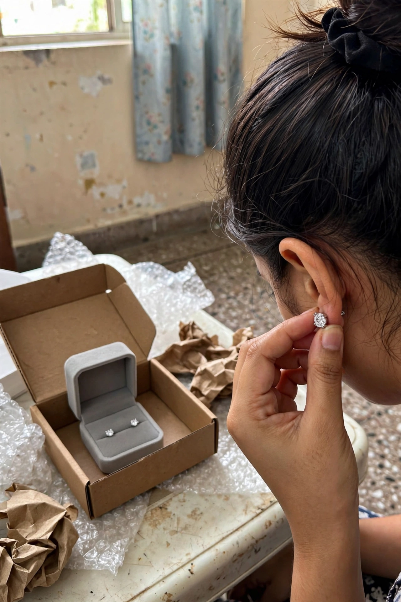
AI concept picture, not the real product
Silver Diamonds for Everyday Shine
125 creators unbox and wear the Abundance 925 Silver Diamond Stud Earrings at home and CaratLane keeps all 250 Reels and Stories for its page and ads for 6 months.
You receive the Abundance 925 Silver Diamond Stud Earrings from CaratLane, shipped to your home. Open with a close-up of the open CaratLane box on a white table and say "This is my first look at CaratLane silver diamonds." Then film a 25 to 30 second Reel in bright morning light at home, showing the studs on your palm, then worn in each ear, then with your daily outfit. Show the FREE SHIPPING tag on the CaratLane box and mention Dash Delivery in a few hours in your own words. Say what surprised you about the shine and fit in your own words, and keep Best Store for Online Jewellery Shopping as the brand line, not your own claim. Post the Reel plus one Story within 7 days of receiving the earrings and send the raw files for CaratLane channels for 6 months.
Do: Add Instagram's Paid Partnership label with CaratLane and place #ad at the start of the caption and on the Story. Tag @caratlane in the Reel and the Story. Film in daylight and keep the Abundance 925 Silver Diamond Stud Earrings in clear focus. Send the raw Reel and Story files to the brand for 6-month reuse on its handles and ads.
Don't: Do not feature any other jewellery brand, retailer or silver line in the Reel or Stories. Do not delete the Reel or Stories without the brand's written approval. Do not buy likes, follows or comments. Do not present CaratLane claims like Best Store for Online Jewellery Shopping as your own test result.
Idea 2
Claude
Swirling Shine, Picked Up In Store
83 micro creators across Tamil Nadu walk into a CaratLane store, pick up their Swirling Shine 14KT gold studs and film the visit with the store tagged; your stores get seen by local followers and you can repost and run every file as an ad for six months.
You get one pair of Swirling Shine Gold Stud Earrings in 14KT gold, picked up at a CaratLane store in Tamil Nadu on a visit date CaratLane confirms within 24 hours of your pick; if they are shipped to you instead, still film the Reel at your nearest CaratLane store wearing them. For your first three seconds, open on you walking through the store door with the CaratLane sign in frame, then cut to the earrings being handed to you over the counter. After that, try them on at the store mirror and end outside wearing them, for a 20 to 30 second Reel. Post one Story at the store that day with the store's location tag, and a second Story within the week wearing them out. Use the store's own light inside, and step out into daylight for the last shot. Say in your own words what the visit was like and that the studs are 14KT gold, and tell people they can find their nearest store on CaratLane's site; keep 'best store' and 'best price in India' as CaratLane's lines, not yours. There is no link or code; post within 7 days of your visit and by 3 November at the latest, send the raw files, and CaratLane may repost them and run them as ads for 6 months.
Do: Turn on Instagram's Paid partnership label and add #ad at the start of your caption. Tag CaratLane and add the store's location tag on the Reel and both Stories. Show the store front or sign in your first shot. Send the raw files when you post.
Don't: Do not show or tag any other jewellery brand or store in the same post. Do not delete or archive the posts without CaratLane's written approval. Do not buy likes, views or followers. Do not say 'best store for online jewellery shopping' or 'best price in India' as your own words; those are CaratLane's claims. Do not film other shoppers' faces without asking them.
Muse
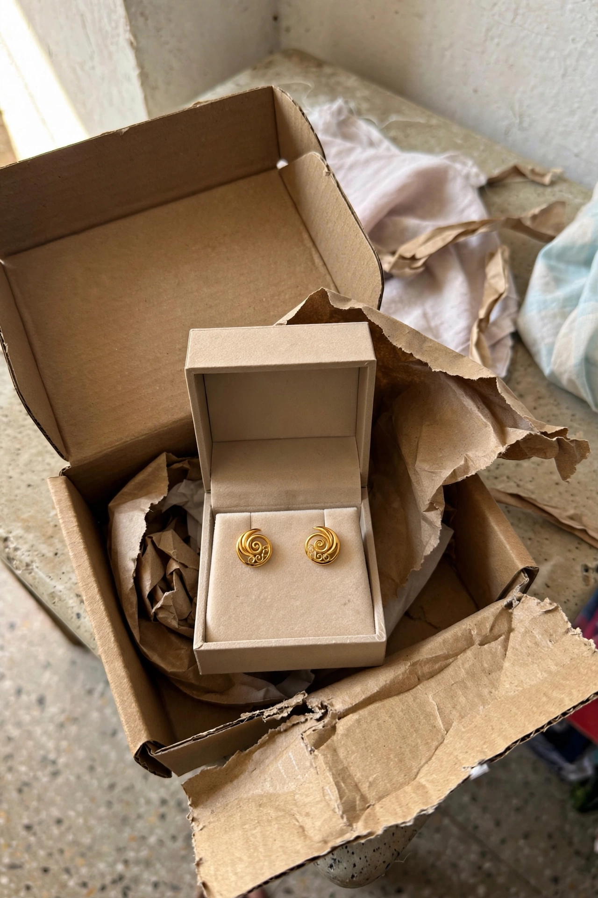
AI concept picture, not the real product
Tamil Nadu Gold Studs Store Visit
83 creators visit CaratLane stores in Tamil Nadu to try the Swirling Shine Gold Stud Earrings (14KT) and CaratLane keeps all 249 Reels and Stories for its page and ads for 6 months.
You receive the Swirling Shine Gold Stud Earrings (14KT) from CaratLane through a store pickup in Tamil Nadu on the visit date the brand assigns within 24 hours of selection. Open with you outside the CaratLane store sign in daylight and say "I am at CaratLane to try the 14KT gold studs." Then film a 30 to 40 second Reel at the store counter and at home in clear daylight, showing the trial, the billed box, and the studs styled with evening wear. Point to the CaratLane - A TATA Product board in store and explain in your own words why that trust mark matters for gold. Describe the fit and shine in your own words, and keep CaratLane offers the best gold and diamond jewellery designs online as the brand line, not your own test result. Post the Reel plus two Stories with the store location tag within 7 days of the visit and send the raw files for CaratLane channels for 6 months.
Do: Add Instagram's Paid Partnership label with CaratLane and place #ad at the start of the caption and on each Story. Tag @caratlane and add the store location tag on the Reel and both Stories. Show the Swirling Shine Gold Stud Earrings (14KT) trial clearly in daylight. Send the raw files to the brand for 6-month reuse on its handles and ads.
Don't: Do not feature any other jewellery brand, store or gold seller in the Reel or Stories. Do not delete the Reel or Stories without the brand's written approval. Do not buy likes, follows or comments. Do not present CaratLane claims like best gold and diamond jewellery designs online as your own test result.
Idea 3
Claude
Shaya Sassy Spirit for Diwali
83 paid micro creators across India get ready for Diwali in the Owning My Sassy Spirit 925 silver earrings and share your code and product link before Dhanteras; you get sales you can count and can repost and run every file as an ad for six months.
You get one pair of Owning My Sassy Spirit Earrings in 925 Silver from Shaya, CaratLane's silver line, shipped within 48 hours of your pick, plus the cash amount CaratLane sets. For your first three seconds, open on your Diwali outfit laid out on the bed with one empty spot, drop the earrings into it and say 'this is what finishes it'. After that, get ready for Diwali with the earrings going on last, and end in your festive look by diyas or fairy lights, for a 20 to 30 second Reel. Film the getting-ready part in daylight and the last shot in warm evening light at home, then post two Stories, one opening the box and one in your festive look. Say in your own words why they suit the festival and that they are 925 silver, and you can mention the free shipping and 15-day returns CaratLane offers; keep 'best price in India' and 'best store' as CaratLane's claims, not yours. Put the product link as a link sticker in both Stories, and show the code CARATL20 on screen and in the Reel caption. Post within 7 days of receiving them and by 5 November at the latest, before Dhanteras and Diwali, send the raw files, and CaratLane may repost them and run them as ads for 6 months.
Do: Turn on Instagram's Paid partnership label and add #ad at the start of your caption. Tag CaratLane in the Reel and both Stories. Add the product link as a link sticker in both Stories. Show the code CARATL20 on screen and in the caption. Send the raw files when you post.
Don't: Do not show or tag any other jewellery brand in the same post. Do not delete or archive the posts without CaratLane's written approval. Do not buy likes, views or followers. Do not say 'best price in India' or 'best store for online jewellery shopping' as your own words; those are CaratLane's claims. Do not change the code or link CaratLane gives you.
Muse
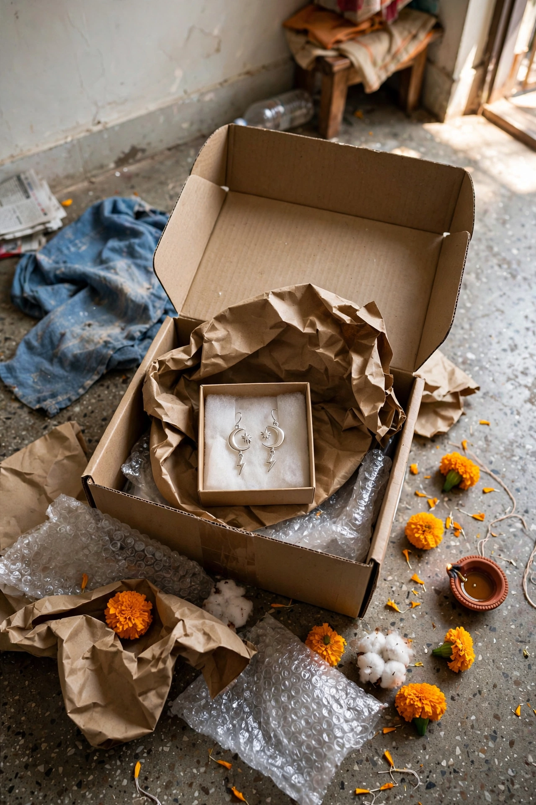
AI concept picture, not the real product
Diwali Sassy Silver Gift Pick
83 creators style the Owning My Sassy Spirit Earrings in 925 Silver for Diwali gifting and CaratLane gets sales with code CARATL20 plus 249 Reels and Stories for 6 months.
You receive the Owning My Sassy Spirit Earrings in 925 Silver from CaratLane, shipped to you, plus the cash amount the brand sets. Open on your festive table with a lit diya next to the CaratLane box and say "My Diwali silver pick is here from CaratLane." Then film a 25 to 35 second Reel in warm evening light at home, styling the earrings with two Diwali outfits and a close-up of the 925 mark. Mention 15-DAY RETURNS in your own words while showing the bill and box. Tell viewers what you would gift and why in your own words, and keep Best Store for Online Jewellery Shopping as the CaratLane claim, not your promise. Add the product link and the code CARATL20 the brand confirms for you in your Reel caption and both Stories with a sticker. Post the Reel plus two Stories by 5 November, within 7 days of receiving the earrings, and send the raw files for CaratLane ads for 6 months.
Do: Add Instagram's Paid Partnership label with CaratLane and place #ad at the start of the caption and on each Story. Tag @caratlane and show the Owning My Sassy Spirit Earrings in 925 Silver with the code CARATL20 in caption and stickers. Film festive styling in warm light and speak in your own words. Send the raw files to the brand for 6-month reuse on its handles and ads.
Don't: Do not feature any other jewellery brand, marketplace or silver label in the Reel or Stories. Do not delete the Reel or Stories without the brand's written approval. Do not buy likes, follows or comments. Do not present CaratLane claims like Best Store for Online Jewellery Shopping as your own promise.
Harissons
Idea 1
Claude
Three Days. One ODYSSEY.
125 nano creators pack a 15.6-inch laptop and three days of clothes into the ODYSSEY on camera and post a Reel and a Story; you keep every raw file to repost and run as ads for six months.
You receive one ODYSSEY Essential 40L laptop backpack, shipped within 48 hours of being picked. Open on everything for a three-day trip laid flat on your bed: your 15.6-inch laptop, clothes for two or three days, documents, chargers and a water bottle, then pack it all into the ODYSSEY in one continuous shot and zip it shut. After that, show the hidden anti-theft pocket, plug your phone into the USB port, and end with the bag on your back at the door, the station or the airport. Keep the Reel 20 to 40 seconds, vertical, in daylight by a window or outside, and post one Story of the bag leaving the house with you. Say in your own words what fit and what surprised you; the site says it fits a 15.6-inch laptop plus clothes for 2 to 3 days in 40 litres, so show it rather than claim it. Lines like 'India's best anti-theft backpack', 'water-resistant', the 48-month warranty and 'beats big brands' are Harissons' claims, so leave them out or say Harissons says so. There is no link or code. Post within 7 days of receiving it, by 4 November at the latest, and send the raw file; Harissons may repost it and run it as an ad for six months.
Do: Turn on Instagram's Paid partnership label with Harissons and start the caption with #Ad or #Collab. Tag Harissons in the Reel, the caption and the Story. Pack your real things, your own laptop and clothes, in one unbroken shot. Show the hidden anti-theft pocket and the USB port on camera. Send the raw, unedited file with your post.
Don't: Do not show or mention another bag brand, including the one you used before. Do not delete or archive the post without Harissons' written approval. Do not buy likes, views, comments or followers. Do not repeat 'best anti-theft backpack', 'most durable', 'water-resistant' or the warranty as your own claim.
Muse
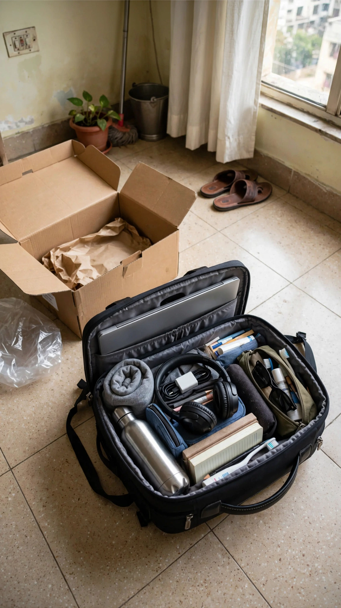
AI concept picture, not the real product
Carry Authority From Office To Airport
125 creators pack the ODYSSEY 40L for a real workday and trip and show what fits, Harissons Bags keeps each Reel and Story for its own channels for 6 months.
You receive the ODYSSEY Essential 40L Premium Laptop Backpack for 15.6-inch laptops from Harissons Bags. Open on your bed with the empty bag flat, and say "This is my full office plus two-day trip in one bag." Then pack your 15.6-inch laptop, charger, tiffin, water bottle and one change of clothes on camera, close it, and lift it onto your shoulders by the front door in daylight. Film one vertical Reel under 40 seconds and one Story of you wearing it outside, in natural morning light at home or on your commute. Show the water-repellent fabric with a few drops of water, and say in your own words what fit and what surprised you. Keep Harissons Bags lines like 'Bags that 5,00,000+ People Love' and the 5.0 rating as the brand's words on text on screen, not as your own claim. Send the raw files so the brand can repost on its own handles and run them as ads for 6 months, and post within 7 days of receiving the bag.
Do: Add Instagram's paid partnership label for Harissons Bags and start your caption with #ad. Tag Harissons Bags in the Reel and the Story. Film in daylight so the ODYSSEY Essential 40L, the laptop sleeve and the zips stay sharp. Keep the Story live for 24 hours and share the raw files with the brand.
Don't: Do not show any other bag brand in the Reel or Story. Do not delete the Reel or Story without the brand's written approval. Do not buy likes, followers or comments. Do not present 'Bags that 5,00,000+ People Love' or the 5.0 rating as your own test result.
Idea 2
Claude
Planned for the Commute. Tested for 14 Days.
250 micro creators carry the TEKNOS on their real commute for two weeks and post a day 1 vs day 14 YouTube Short with an honest verdict; you get 250 public reviews and the raw files for six months.
You receive one TEKNOS Commanding 35L laptop backpack within 48 hours of being picked. Open on the bag unzipped from above with your laptop sitting in the raised cradle, then press the base flat with your hand to show the laptop sits above the bottom. Then carry it on your real commute for two weeks and cut between day 1 and day 14: the tablet sleeve, the gadget organiser, the internal bottle holder, the rear anti-theft pocket and the ventilated back panel at the end of a long day. Make one vertical YouTube Short of 30 to 55 seconds, in daylight, in the places you actually go: the metro, an auto, the office lift, your desk. Say in your own words which pocket you used most and what you would change; Harissons' own line is 'It's not padding. It's planning.', and you can read it out as theirs. Anything about protection, durability or how it compares to other brands stays Harissons' claim, not yours. There is no link or code. You get 14 days of use after it arrives plus 2 days to edit, with 14 November as the last date to post, and please send the raw file; Harissons may repost it and run it as an ad for six months.
Do: Tick 'Includes paid promotion' in YouTube Studio when you upload. Say 'Harissons sent me this bag' in the video and mention Harissons in the title or description. Film the day 1 and day 14 shots in the same spot so the comparison is clear. Show the raised laptop cradle in the first three seconds. Send the raw, unedited file with your post.
Don't: Do not show or name another bag brand. Do not delete, hide or make the Short private without Harissons' written approval. Do not buy views, likes, comments or subscribers. Do not say it protects your laptop better or lasts longer than other bags, or repeat 'beats big brands' as your own claim.
Muse
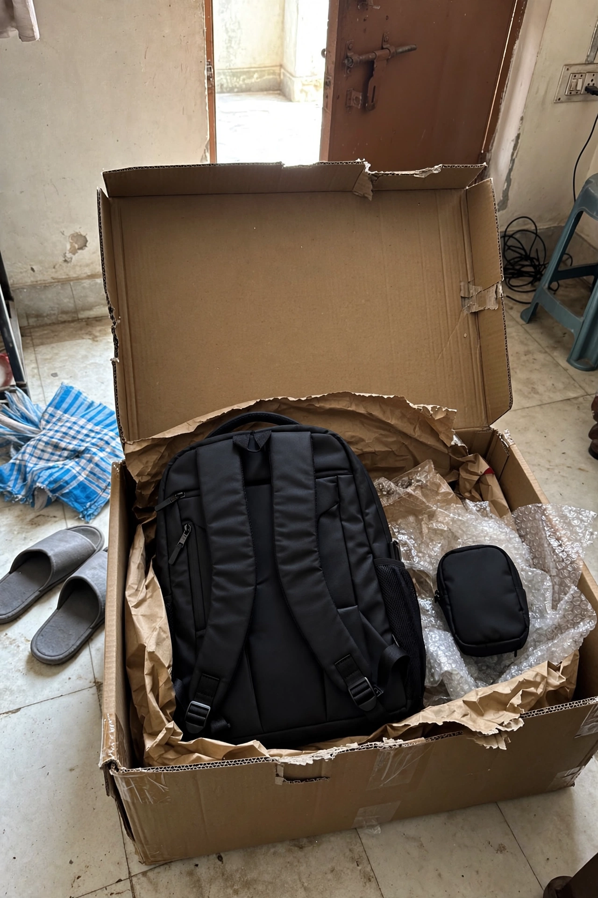
AI concept picture, not the real product
Thirty Litres Through Real Office Days
250 creators film a week of office commutes with the CARBON 30L and say what held up, Harissons Bags keeps each Short for ads and product pages for 6 months.
You receive the CARBON Tenacious 30L Premium Laptop Backpack for 15.6-inch laptops from Harissons Bags. Open on you stepping out of your office lift wearing the packed bag, and say "Day three with this bag, here is what still looks new." Then show the same bag at your desk on day one and day seven in daylight, load your laptop and water bottle on camera, and tug the straps and zips close to the lens. Make one vertical YouTube Short under 60 seconds in bright daylight, filmed at your office and at home. Mention in your own words how the 30L size carried your work load, and show Made in India with 2 Years Warranty as on-screen text as the brand's promise. Send the raw file so the brand can repost on its own handles and run it as an ad for 6 months, and post within 14 days of receiving the bag plus 2 days to edit.
Do: Tick YouTube's paid promotion box for Harissons Bags and put #ad at the start of your description. Tag Harissons Bags in the description of the Short. Film the CARBON Tenacious 30L in bright daylight with your laptop inside. Keep the focus on the bag, the straps and the zips with no extra filters.
Don't: Do not show any other bag brand in the Short. Do not delete the Short without the brand's written approval. Do not buy views, likes or subscribers. Do not claim Made in India with 2 Years Warranty or the 4.4 rating as your own finding.
Idea 3
Claude
One JAKE. Three Shapes. Home for Diwali.
83 micro creators switch the JAKE from briefcase to gym duffel to backpack across one day before Diwali and share your code in a Reel and two Stories; you get sales you can count and the raw files for six months.
You receive one JAKE Versatile 31L 3-in-1 gym duffel within 48 hours of being picked, plus the cash amount Harissons sets for you. Open on a single take of the bag changing shape in your hands: briefcase handle, then duffel straps, then on your back as a backpack. After that, follow one day: a briefcase into work, a duffel at the gym, then a backpack on the way home for Diwali or a family visit. Keep the Reel 20 to 40 seconds, vertical, daylight for the day scenes and warm diya or fairy light for the last shot, and post two Stories: one of the switch and one with a link sticker to the JAKE page. Say in your own words which shape you used most; you can quote the site's rating of 4.7 from 327 reviews as Harissons' number. Use the code HARISS20 in the Reel caption and on both Stories, with the link https://www.harissonsbags.com/products/jake-customization. Do not call it better value than other brands or repeat 'beats big brands' as your own words. Post within 7 days of receiving it, by 5 November so it lands before Dhanteras and Diwali, and send the raw file; Harissons may repost it and run it as an ad for six months.
Do: Turn on Instagram's Paid partnership label with Harissons and start the caption with #Ad. Tag Harissons in the Reel, the caption and both Stories. Put the code HARISS20 in the caption and on both Stories, with a link sticker to the JAKE page. Show all three shapes, briefcase, duffel and backpack, in the first shot. Send the raw, unedited file with your post.
Don't: Do not show or name another bag brand or another discount code. Do not delete or archive the Reel or Stories without Harissons' written approval. Do not buy likes, views, comments or followers. Do not repeat 'beats big brands' or any price comparison as your own claim.
Muse
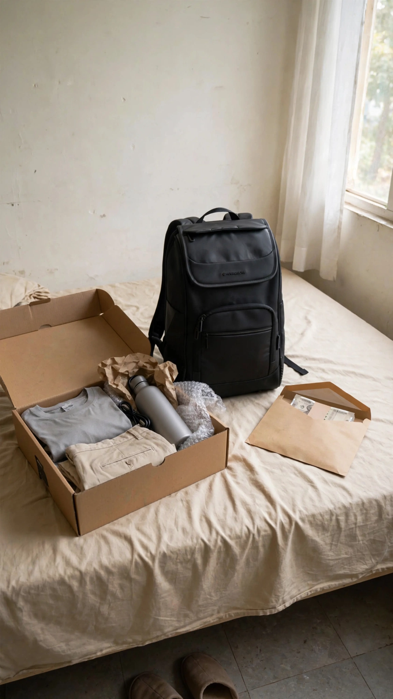
AI concept picture, not the real product
Diwali Journeys Deserve Timeless Strength
83 creators pack the RHINO 30L for Diwali travel, share their code in a Reel and Stories, and Harissons Bags gets festive content that drives sales.
You receive the RHINO Timeless 30L Laptop Backpack from Harissons Bags plus the cash amount the brand sets. Open on your hallway with the bag packed beside a lit diya, and say "My Diwali trip bag is packed and ready." Then pull your laptop, festive outfit and small gifts from the bag in one take, and walk out of the door in daylight. Make one vertical Reel under 35 seconds and two Stories, one poll on what you packed and one with the link sticker, all in bright home daylight. Show the 4.8 rating and Made in India tag on screen, and say in your own words why the RHINO worked for festive travel. Add the discount code the brand gives you (HARISS20) in your caption and Stories, keep the rating and warranty as the brand's words, and post within 7 days of receiving the bag so it is live before Diwali.
Do: Add Instagram's paid partnership label for Harissons Bags and start your caption with #ad. Tag Harissons Bags and add the discount code the brand gives you in your caption and both Stories. Film the RHINO Timeless 30L in bright daylight and show what fits inside. Keep both Stories live for 24 hours and share the raw files with the brand.
Don't: Do not show any other bag brand in the Reel or Stories. Do not delete the Reel or Stories without the brand's written approval. Do not buy likes, followers or comments. Do not present the 4.8 rating or Made in India as your own test result.
Play Salon
Idea 1
Claude
Your Sprinkle of Stardust, Gifted
Twenty Bengaluru creators each get a Rs 1,000 Play Salon Gift Card and film it from the moment it lands in their inbox to the service they spend it on, and you can reuse every Reel, Story and raw file for six months.
You get a Rs 1,000 Play Salon Gift Card in your email, to spend at a Play Salon in Bengaluru. Open on your phone screen as the gift card email lands and say, "Rs 1,000 at Play Salon. What do I spend it on?" Then film the choice: you asking at the counter what the card covers, your pick (nail art, a trim or a treatment within its value), you settling into the chair, and the moment you first see the result in the mirror. Keep the Reel 30 to 45 seconds, shot by the mirror lights or near a window, and add one Story from the chair with the outlet's location tag. Say in your own words why you picked that service and who you would send a card like this to; the site says it reaches an inbox faster than you can read a sentence, and it can carry a personal message of up to 300 characters. Leave lines like "the best salon in Bangalore" to the brand, and there is no link or code for this one. After you are selected you pick your visit date, the salon confirms within 24 hours, and you post within 7 days of the visit and by 2 November at the latest, then send your raw unedited files. Play Salon may repost your video on its own handles and run it as an ad for six months.
Do: Turn on the Paid Partnership label with Play Salon and write #Gifted or #Collab in the first line of the caption. Tag Play Salon's handle and add the outlet's location tag on the Reel and the Story. Open on the gift card email arriving on your phone. Show the service you chose and your first look in the mirror. Send your raw, unedited files after posting.
Don't: Do not show or mention other salons, spas or their products. Do not delete or archive the Reel or Story without written approval from Play Salon. Do not buy likes, views, comments or followers. Do not say Play Salon is the best salon in Bangalore or one of the leading beauty brands as your own words; those lines are the brand's.
Muse
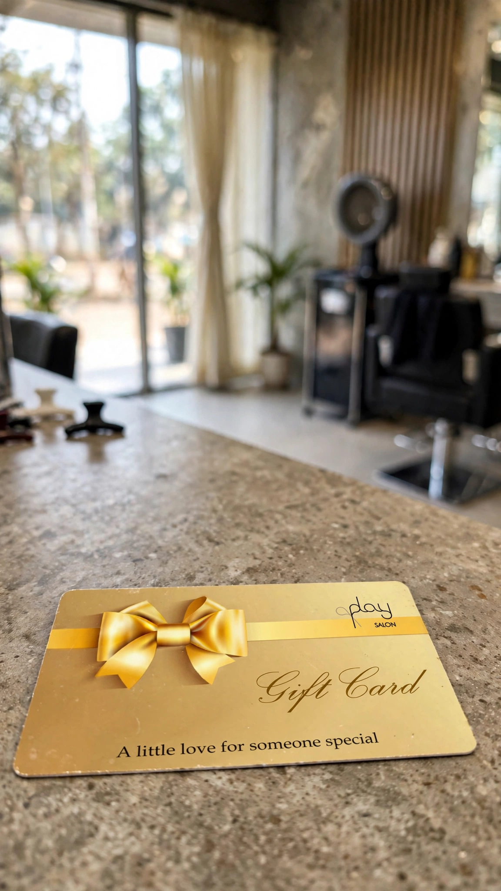
AI concept picture, not the real product
Sprinkle of Stardust for Someone You Love
125 Bengaluru nano creators visit with a Rs 1,000 Play Salon Gift Card and film their service day, you keep every Reel, Story and raw file for reuse for six months.
You receive a Rs 1,000 Play Salon Gift Card to spend on any service at any Play Salon in Bengaluru. Open with you holding the cream gift card to camera in the salon chair and saying "Play Salon gifted me this, come get ready with me." Then film your walk-in, the service and the final reveal in one vertical Reel of 25 to 35 seconds plus one Story cut, all in bright daylight inside the salon. Show that your card is "valid across the Play Salons in Bengaluru" on the envelope and say in your own words what you chose and how it felt. The lines "the best salon in Bangalore" and "Making Eyes Smile and Hearts Glow since 1999" stay the brand's words, so please do not say them as your own. There is no link or code for this one. Post your Reel and Story within 7 days of your visit, and send the raw files so the brand can repost.
Do: Add Instagram's Paid partnership label with Play Salon and keep #gifted in your caption. Tag Play Salon and add your visit salon location tag on your Reel and Story. Film inside the salon in daylight and keep the gift card visible in one shot. Send your raw Reel and Story files with your post links.
Don't: Do not show any other salon, spa or beauty brand in your Reel or Story. Do not delete your Reel or Story without the brand's written approval. Do not buy likes, followers or comments. Do not say the best salon in Bangalore as your own opinion.
Idea 2
Claude
Glow & Go with Megan by Skeyndor
Twenty micro creators walk into Play Salon Phoenix Market City for the Megan by Skeyndor treatment and show their followers exactly where to find it, sending Bengaluru to that salon and giving you every file for six months.
You get one Megan by Skeyndor skin treatment, which in Bengaluru is available only at Play Salon Phoenix Market City and Shea Spa. Open walking through Phoenix Market City towards the salon and say, "Bengaluru gets Megan by Skeyndor in just two places, and I'm walking into one." Then film your bare skin at the treatment room mirror before you start, the room and the machine, a close-up of the treatment on your skin, and finish on your face at the same mirror and in the same light, with no filter. Keep the Reel 30 to 45 seconds, then post two Stories: one as you arrive with the Phoenix Market City location tag, and one after on how the session felt with the salon tagged. Say in your own words what the session felt like, and ask the therapist one question on camera about how the treatment works. Lines like "the world's most advanced skin treatment technology", "4X more effective" and "visible results from the very first session" stay the brand's; do not say them as your own, and there is no link or code. After you are selected you pick your visit date, the salon confirms within 24 hours, and you post within 7 days of the visit and by 2 November at the latest, then send your raw unedited files. Play Salon may repost your video on its own handles and run it as an ad for six months.
Do: Turn on the Paid Partnership label with Play Salon and write #Gifted or #Collab in the first line of the caption. Tag Play Salon's handle on the Reel and both Stories, and add the Phoenix Market City location tag. Open on your walk through the mall to the salon. Film your skin before and after at the same mirror, in the same light, with no filter. Send your raw, unedited files after posting.
Don't: Do not show or mention other clinics, salons or skin devices. Do not delete or archive the Reel or Stories without written approval from Play Salon. Do not buy likes, views, comments or followers. Do not say it is the world's most advanced treatment, 4X more effective or gives visible results from the first session as your own claim; those are the brand's words. Do not use filters or edits that change how your skin looks.
Muse
AI concept picture, not the real product
My First Megan Glow at Phoenix
83 Bengaluru micro creators book the Megan by Skeyndor facial at Phoenix Marketcity and show the treatment day, you get location-tagged Reels that bring footfall and six months of reuse.
You receive one Megan by Skeyndor skin regeneration facial at Play Salon Phoenix Marketcity. Open on your bare skin close-up in the treatment room and say "I am trying the Megan facial at Phoenix Marketcity today." Then film the machine step, the relaxed chair moments and your glow right after, in one 30 to 40 second vertical Reel and two Stories, all in soft natural treatment-room light. Show or say that it is exclusively available at Play Salon Phoenix Marketcity and Shea Spa, and describe in your own words how your skin looked and felt after. The line about the world's most advanced skin treatment technology and 4X more effective stays the brand's claim, so do not repeat it as your result. There is no link or code for this visit. Post within 7 days of your visit and send the raw files so the brand can repost.
Do: Add Instagram's Paid partnership label with Play Salon and keep #gifted in your caption. Tag Play Salon and add the Phoenix Marketcity location tag on your Reel and both Stories. Keep the treatment room daylight look and show your real skin before and after. Send your raw files with your post links.
Don't: Do not show any other salon, clinic or skin brand in your content. Do not delete your Reel or Stories without the brand's written approval. Do not buy likes, followers or comments. Do not say 4X more effective or visible results from the very first session as your own promise.
Idea 3
Claude
Diwali-Ready Hair in Sixty Minutes
Twenty micro creators book a 60-minute Korean Hair Spa before Diwali and post a YouTube Short of their hair going from everyday to festive, so Bengaluru sees real people choosing Play Salon for the festival.
You get a 60-minute Korean Hair Spa at a Play Salon in Bengaluru, done with L'Oréal Professionnel, Redken or Kerastase. Open on a close-up of your hand running through your hair as it is today and say, "Diwali is almost here and my hair is not." Then film the wash basin, the stylist's hands working the product through, the bottle they chose, and the blow-dry. End on a slow turn in your festive outfit with a diya or fairy lights behind you. Keep the Short vertical and under 60 seconds, filmed under the salon's lights and then at home in warm evening light. Ask your stylist for one hair care tip on camera, and say in your own words how your hair feels afterwards. Leave lines like "world-class products that deliver exceptional results" to the brand, and there is no link or code. After you are selected you pick your visit date, the salon confirms within 24 hours, and you post within 7 days of the visit and by 5 November at the latest so it lands before Diwali, then send your raw unedited files; Play Salon may repost it on its own handles and run it as an ad for six months.
Do: Turn on the paid promotion setting in YouTube Studio and write #Gifted or #Collab at the start of the description. Name Play Salon and the outlet you visited in the title or description. Open on your hair before the spa, in your hand. Show the product bottle your stylist uses and one tip from them. Send your raw, unedited files after posting.
Don't: Do not show or mention other salons or hair brands outside the ones used in your service. Do not delete, unlist or make the Short private without written approval from Play Salon. Do not buy views, likes, comments or subscribers. Do not say the products deliver exceptional results or that Play Salon is the best salon in Bangalore as your own words; those lines are the brand's.
Muse
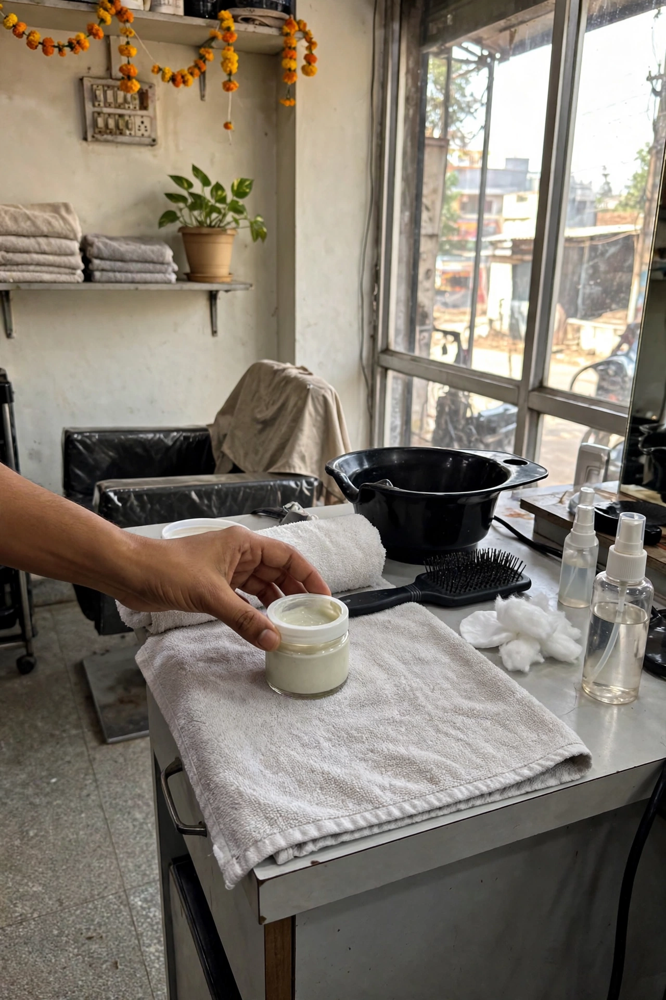
AI concept picture, not the real product
Diwali Ready Hair in Sixty Minutes
250 Bengaluru micro creators get the 60-minute Korean Hair Spa before Diwali and share the shine on YouTube Shorts, you collect festive proof you can reuse for six months.
You receive a 60-minute Korean Hair Spa at a Play Salon in Bengaluru before Diwali. Open with a back-camera shot of your hair in daylight and say "My Diwali hair reset starts now." Then film the wash, the massage and the smooth blow-dry finish in one vertical Short of 30 to 45 seconds inside the salon. Show the L'Oreal Professionnel, Redken or Kerastase bottles on the shelf and say in your own words what the 60 minutes felt like and how your hair moved after. The lines about luxury with world-class products and 25 years of style stay the brand's words, so do not claim them as your own. There is no link or code for this visit. Post your Short by 5 November, within 7 days of your visit, and send the raw file so the brand can repost.
Do: Tick YouTube's Paid promotion box and add #gifted with Play Salon in your Short description. Mention Play Salon Bengaluru in your title or description and tag the salon. Film in the salon in bright light and keep the final hair shine in daylight. Send your raw Short file with your post link.
Don't: Do not show any other hair brand, clinic or oil in your Short. Do not delete your Short without the brand's written approval. Do not buy views, likes or subscribers. Do not say the best salon in Bangalore as your own words.
Traya
Idea 1
Claude
The Test, Then the Kit
125 nano creators take Traya's free Hair Test on camera, then unbox the kit made for their own hair, and you get 125 Reels, 125 Stories and every raw file to reuse for six months.
You take Traya's free Hair Test and Traya ships you the kit your result calls for, one month of it. First three seconds: you on your phone at home, saying 'Let's find out why my hair is falling' as you start the test. Show two or three of the questions, then your result and your hair stage on screen. Cut to the doorbell: the box arrives, you open it, and you hold up each item and say in one line why it is in YOUR kit, reading from the card inside. Close on the full kit laid out and 'This one is mine.' Keep the Reel 25 to 40 seconds, at home in daylight, no studio. The Story is one shot of your result screen or the open box, with the link to take the test.
Do: Turn on the Paid partnership label and put #ad or #collab in the first line of the caption, since the kit is a gift. Tag Traya's Instagram account in the Reel and the Story. Show the Hair Test on screen and your own result. Show every item in your kit and say why it was picked for you. Put the Hair Test link on the Story. Send the raw file with your post.
Don't: Do not show any other hair, supplement or wellness brand in frame. Do not delete or archive the post without Traya's written approval. Do not buy likes, views, comments or followers. Do not promise results or say the kit grows hair, stops hair fall or cures anything; show your own experience and leave the claims to Traya.
Muse
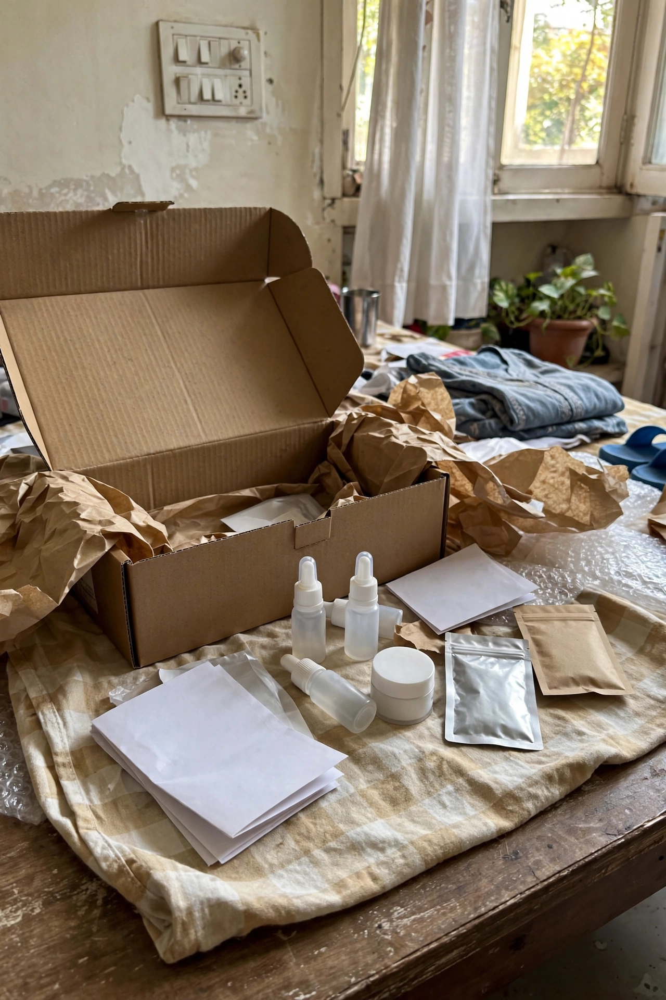
AI concept picture, not the real product
Know Your Root Cause First
125 nano creators take the free hair test and unbox their own customised kit on camera, Traya keeps 250 pieces for its own channels.
You receive your own Traya customised hair kit made after your free online hair test, with diet plan and hair-coach guidance. Open on your phone screen showing your test result as you say, "This is why my hair keeps falling." Then unbox the kit in bright daylight at home and lay out each bottle and pack so the labels show. Keep your Reel to 30 to 45 seconds, plus one Story of the kit on your shelf. Say in your own words why the test felt personal and how you will follow the routine, and mention that Traya says hair health starts from within. Leave lines like 93% saw results and assured results for Traya to say, do not claim them yourself. Post within 7 days of receiving the kit and send the raw files so Traya can repost for 6 months.
Do: Add Instagram's Paid Partnership label with Traya and tag Traya in your Reel and Story. Show the customised kit packs front to camera in bright daylight at home. Say in your own words why the hair test felt personal. Allow Traya to repost your Reel and Story on Traya's own handles and run them as ads for 6 months.
Don't: Do not show any other hair brand, clinic or oil in your Reel or Story. Do not delete your Reel or Story without written approval from Traya. Do not buy likes, followers or comments. Do not say 93% saw results or assured results as your own experience, those lines stay with Traya.
Idea 2
Claude
Fourteen Days With My Kit
250 micro creators post an honest day 1 vs day 14 YouTube Short on living with their own Traya kit, the diet plan and the Hair Coach call included, and you get 250 real routines plus every raw file for six months.
You take the Hair Test and receive your own kit. First three seconds: you face the camera holding the open box and say 'Day 1. Traya made this kit for my hair. Let's see if I stick to it for fourteen days.' Then film a five-second clip every few days: the morning step, the night step, a meal from your diet plan, a minute of your Hair Coach call, and the day you nearly forgot. End on Day 14 in the same spot and the same light, saying honestly how the routine feels now. Keep the Short vertical, 30 to 50 seconds.
Do: Tick 'includes paid promotion' when you upload and put #ad in the title or the first line of the description. Mention Traya by name and link the Hair Test in the description. Show the kit, the diet plan and the Hair Coach, not one product. Open with your Day 1 line and close on Day 14 in the same spot. Keep the forgotten days in; honest beats perfect. Send all raw clips.
Don't: Do not show any other supplement or hair brand in frame. Do not delete or make the Short private without Traya's written approval. Do not buy views, likes, comments or subscribers. Do not show a before-and-after of your hair at day 14; two weeks is about the routine, not results. Do not promise results or say the kit grows hair, stops hair fall or cures anything; show your own experience and leave the claims to Traya.
Muse
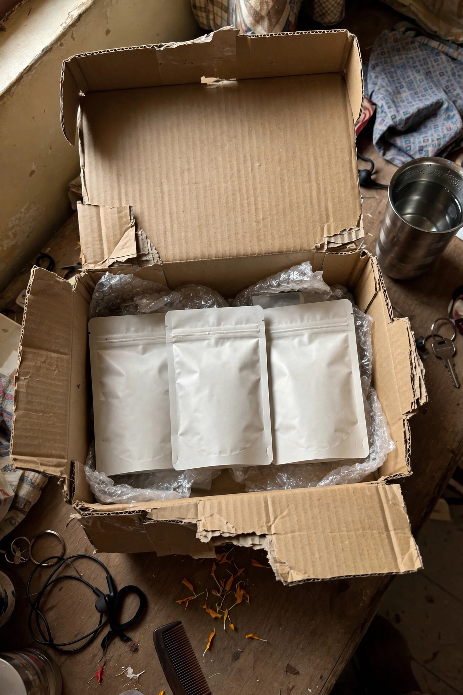
AI concept picture, not the real product
Hair Health Starts From Within
250 micro creators film a two-week diary with Digest Boost around gut health and hair fall, Traya gets honest YouTube Shorts for social proof.
You receive three packs of Digest Boost for improved digestive ability. Open with a close shot of your morning kitchen counter as you say, "I did not know my gut could affect my hair." Then film short daily clips with water and the pack in natural daylight at home, building a 14-day routine diary. Keep your YouTube Short to 30 to 60 seconds and talk like a diary, not a lesson. Say in your own words how the routine fit your mornings, and mention that Traya says hair health starts from within with gut issues and nutrition. Keep lines like 93% saw results and assured results with Traya, do not say them as your own result. Post within 14 days of receiving, plus 2 days to edit, and send the raw files so Traya can reuse them for 6 months.
Do: Turn on YouTube's paid promotion disclosure for your Short and add #ad in your description. Tag Traya in your description and show the Digest Boost packs front to camera. Film in natural daylight at home and keep your diary dates honest. Allow Traya to repost your Short on Traya's own handles and run it as an ad for 6 months.
Don't: Do not show any other hair or gut health brand in your Short. Do not delete your Short without written approval from Traya. Do not buy views, likes or comments. Do not say 93% saw results or assured results as your own result, those lines stay with Traya.
Idea 3
Claude
My Thirty-Day Hair Diary
83 micro creators keep a thirty-day diary with their own Traya kit, a Story on day 1, a Story on day 30 and a Reel that stitches the month together, so you get 83 month-long journeys plus every raw file for six months.
You take the Hair Test and receive your own kit. Day 1 Story: your test result and the open kit, saying 'Day 1 of 30.' Through the month, film short clips on the days that matter: the first week, your Hair Coach check-in, the diet plan on a busy day, a photo of your hairline in the same light every ten days. Day 30 Story: the same spot, the same light, and one honest line on the month. The Reel, 30 to 45 seconds, stitches the thirty days together, opening on 'I gave my hair thirty days with a kit made for it.' Film at home, no studio.
Do: Turn on the Paid partnership label and put #ad or #collab in the first line of the caption. Tag Traya's Instagram account in the Reel and both Stories, and put the Hair Test link on both Stories. Show the whole kit, the Hair Coach and the diet plan. Take the hairline photo in the same spot and light every ten days. Send the raw files.
Don't: Do not show any other hair oil, supplement or haircare brand in frame. Do not delete the Reel or Stories early without Traya's written approval. Do not buy likes, views, comments or link clicks. Do not edit or filter the hairline photos. Do not promise results or say the kit grows hair, stops hair fall or cures anything; show your own experience and leave the claims to Traya.
Muse
Herbal Strength For Her This Diwali
83 micro creators share their Her Santulan routine as a Diwali pick with a code, Traya gets festive Reels that drive sales.
You receive four packs of Her Santulan made with herbal actives for safety and efficacy, plus cash on top that Traya confirms. Open on your festive dresser in warm evening light at home as you hold the pack and say, "My Diwali gift for my hair is herbal care." Then show your night routine with the pack front to camera and film two Stories, one unboxing and one with the pack in your bag. Keep your Reel to 25 to 35 seconds. Say in your own words how the routine fits your evening and who you think it is for, without promising regrowth. Leave lines like assured results and 93% saw results to Traya, and put code TRAYA20 in your Reel caption and in both Stories. Post within 7 days of receiving and send the raw files so Traya can repost and run ads for 6 months.
Do: Add Instagram's Paid Partnership label with Traya and put #ad and TRAYA20 in your Reel caption and Story text. Show the Her Santulan packs front to camera in warm evening light at home. Keep your routine honest and follow the directions on the pack. Allow Traya to repost your Reel and Stories on Traya's own handles and run them as ads for 6 months.
Don't: Do not show any other hair brand or herbal supplement in your Reel or Stories. Do not delete your Reel or Stories without written approval from Traya. Do not buy likes, followers or comments. Do not promise regrowth or say 93% saw results as your own experience, those lines stay with Traya.
HDOR
Idea 1
Claude
Day 1 Se Streak Tak
Eighty-three nano creators post three Stories of their first HDOR week, from the first walk to handing the second registration to a friend, and you keep every raw file for six months.
You get two 100 Days of Running registrations with the event T-shirt, one for you and one for a friend, sent by HDOR once you are selected. Open Story 1 on your shoes by the door in early morning light with the text 'Day 1', then ten seconds of your first 2.5 km on your own street. Story 2, a few days later, is your streak in the HDOR app with GoGo on screen and one line on how the week is going; Story 3, at the end of your first week, is a selfie mid-walk where you tag the friend you are giving the second registration to and say 'Tu bhi?'. Keep each Story under 15 seconds, phone vertical, outdoors in daylight, no beauty filters. Wear the HDOR tee in any Story after it reaches you; it ships about 20 days after registration, so do not wait for it. Say in your own words what got you out the door and why you picked this friend; numbers like 80,000+ people and 1.8 million+ Procam runners are HDOR's to say, not yours. There is no link or code. Post all three Stories by 8 November and send the raw file of each the same day; HDOR may repost them and run them as ads for six months.
Do: Turn on Instagram's Paid partnership label and put #Collab at the start of the text, because the passes count as payment. Tag the HDOR Instagram handle the brand gives you in all three Stories. Show your HDOR app streak in Story 2. Tag the friend you give the second registration to in Story 3. Send the raw file of each Story the day you post it.
Don't: Do not show or name another running app, fitness challenge or sportswear brand. Do not delete the Stories early or remove them from highlights without written approval from HDOR. Do not buy views, likes or followers. Do not state HDOR's numbers or lines as your own claim.
Muse
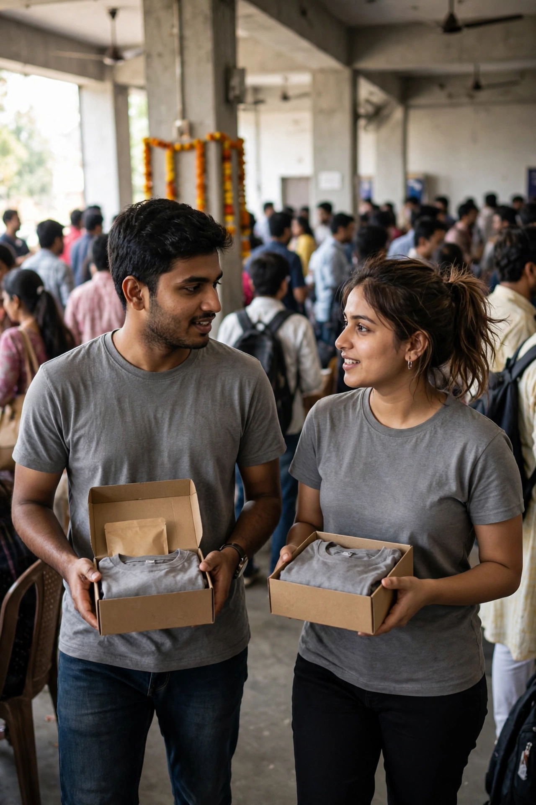
AI concept picture, not the real product
Mumkin Hai First Walk Together
83 nano creators walk with a friend in the HDOR T-shirt and post three same-day Stories; HDOR keeps every file for six months of repost and ads.
You receive two HDOR Registration + T-Shirt kits, one for you and one for a friend or family member, with the tee to wear on camera. Open in your doorway in morning light with your shoes and tee on and say "Mumkin hai, day one and I am showing up for two and a half kilometres." Then film three vertical Stories as it happens, your start step count, a mid-walk selfie clip, and a finish smile with the distance on your tracker, each five to seven seconds in daylight outdoors. Say in your own words why walking daily feels possible for you and invite one person to join you, and show that every ticket includes access to the 100 Days of Running experience. Keep all HDOR counts and dates as the words of the brand and do not promise weight loss, speed or health results as your own. There is no link or code to share for this attendance post. Post all three Stories on the day of your walk and send the raw files, before the 12 November deadline so the brand can repost for six months.
Do: Add Instagram Paid Partnership with HDOR and #ad on all three Stories. Tag HDOR in each Story and add your city sticker on the first frame. Wear the HDOR T-shirt clearly in daylight in every clip. Show the tracker distance at the end of the third Story.
Don't: Do not feature any other run, walk or cycle challenge, app or coach. Do not delete the Stories without the brand's written approval. Do not buy views, followers or engagement. Do not present HDOR counts or dates as your own results.
Idea 2
Claude
Diwali Ki Subah, Saath Chalo
One hundred and twenty-five micro creators use the second pass to bring a parent or sibling on a Diwali-week morning walk and post a Reel and a Story, so families hear about HDOR from people they already follow.
You get two HDOR registrations with the finisher medal, one for you and one for a parent, sibling or anyone at home you want to walk with. Open the Reel on you at their door at dawn holding two pairs of shoes, with your line, 'Chalo, Diwali se pehle ek walk.' Then film the two of you on the 2.5 km: the chatter, the slow bits, the last stretch, and end on both of you with chai or the first diyas being set out. Keep the Reel 30 to 45 seconds, in early morning light in your own lane or park, and post one Story the same day showing the walk logged in the HDOR app. Say the detail HDOR is built on: every pace, every age, every body, open from 13 with no top age limit. In your own words, say why you asked this person and how it felt to walk together. The medal is posted only to people who finish 85 active days, so speak of it as the goal, never as something you already have, and keep HDOR's numbers as HDOR's. There is no link or code; post the Reel and Story by 8 November, Diwali, send the raw files the same day, and HDOR may repost and run them as ads for six months.
Do: Turn on Instagram's Paid partnership label and put #Collab at the start of the caption, because the passes count as payment. Tag the HDOR Instagram handle the brand gives you in the Reel and the Story. Get both of you in frame in the first three seconds. Ask the person you walk with before you post their face. Send the raw files the day you post.
Don't: Do not show or name another running app, fitness challenge or sportswear brand. Do not delete or archive the Reel without written approval from HDOR. Do not buy views, likes or followers. Do not claim the walk fixed anyone's health, and do not state HDOR's numbers or lines as your own.
Muse
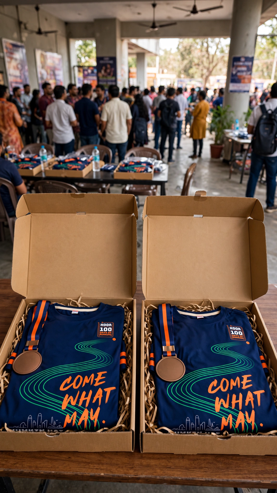
AI concept picture, not the real product
Eighty Five Days To The Medal
125 micro creators film a 45-second daylight Reel explaining the 85-day finisher rule and add a Story selfie; HDOR reuses every file for six months.
You receive two HDOR Registration + Finisher Medal kits, one for you and one for a partner, with medal access after eighty-five active days. Open on your palm holding your phone with the tracker at zero and say "Come what may, I walk my two and a half kilometres today." Then film one forty-five second Reel in bright morning light on your street or park, your first steps, your pace, and a Story selfie explaining the eighty-five day finisher rule in your own words. Show the real HDOR rule on screen or say it, run, jog or walk at least two and a half kilometres a day or cycle at least eight kilometres a day for one hundred days. Keep the eighty thousand plus movers and one point eight million Procam community numbers as HDOR words and do not claim you already earned the medal. There is no link or code to share for this awareness post. Finish the Reel plus one Story on the day you move and send the raw files, before the 12 November deadline for repost use for six months.
Do: Add Instagram Paid Partnership with HDOR and #ad in the Reel caption and on the Story. Tag HDOR in the Reel caption and in the Story sticker. Film in bright morning light outdoors and show the tracker at zero and at finish. Say the 85-day finisher rule in your own words for the Registration + Finisher Medal kit.
Don't: Do not show any other run, walk or cycle medal, app or event. Do not delete the Reel or Story without the brand's written approval. Do not buy likes, comments or shares. Do not claim the finisher medal is already earned or promise fitness outcomes.
Idea 3
Claude
Mumkin Hai, Kahin Bhi
Two hundred and fifty nano creators film their daily 2.5 km wherever they happen to be that day, from a terrace to an airport terminal, and you keep every Reel and raw file for six months.
You get two HDOR registrations with the full kit: the event T-shirt, and the finisher medal for those who complete 85 active days. Open on your phone with the HDOR app at 0.0 km and the words 'Aaj ka 2.5 km, yahan', then cut to wherever you actually are: a terrace, a mall corridor, a treadmill, a park, an airport terminal. Film the walk in three or four short clips that show the place, then end on the app screen with your route, pace and splits. Keep it 20 to 30 seconds, vertical, in whatever light the place has, and never stage a place you were not at. Say in your own words that the challenge asks for 2.5 km a day on foot or 8 km on a cycle, and that you can do it anywhere. 'Simple enough to start. Strong enough to change you.' is HDOR's line, not a promise from you, and do not say you have the medal. There is no link or code; post the Reel by 8 November, send the raw files the same day, and HDOR may repost it and run it as an ad for six months.
Do: Turn on Instagram's Paid partnership label and put #Collab at the start of the caption, because the passes count as payment. Tag the HDOR Instagram handle the brand gives you. End on the HDOR app screen with route, pace and splits. Send the raw clips the day you post.
Don't: Do not show or name another running app, fitness challenge or sportswear brand. Do not delete or archive the Reel without written approval from HDOR. Do not buy views, likes or followers. Do not film where filming is not allowed, such as airport security or railway platforms without permission. Do not state HDOR's numbers or lines as your own claim.
Muse
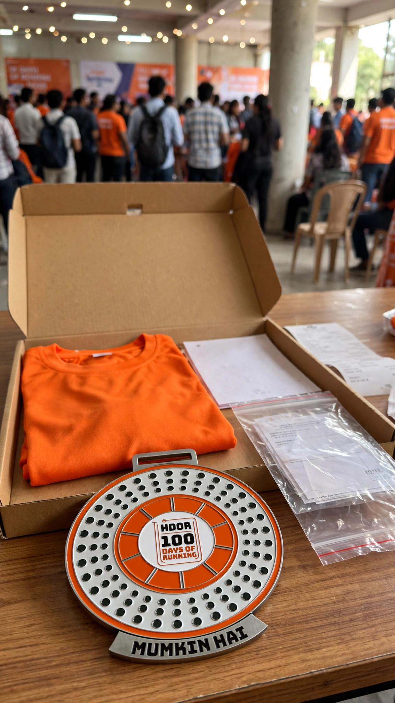
AI concept picture, not the real product
One Hundred Days Of Showing Up
250 nano creators unbox the HDOR tee on camera and film a 60-second home-to-street Reel; HDOR builds a reuse library for six months.
You receive the full HDOR Registration + T-Shirt + Finisher Medal kit for the 100 Days of Running experience with tee access plus medal access. Open by unfolding the HDOR tee on your bed in soft morning daylight and say "One hundred days of showing up starts with this tee." Then film a sixty second daytime Reel at home and outside in daylight, you wearing the tee, lacing up, walking out, and showing your tracker at the finish. Mention in your own words that every ticket includes access to the 100 Days of Running experience and that finishers complete at least eighty-five days. Keep all finisher counts and dates as the words of the brand and do not promise results or say the medal is already earned. There is no link or code to share for this library film. Post the Reel within a day of receiving the kit and send the raw file, before the 12 November deadline so the brand can reuse it for six months.
Do: Add Instagram Paid Partnership with HDOR and #ad in the Reel caption. Tag HDOR in the caption and in the Reel itself. Wear the HDOR T-shirt in both home and outdoor light and keep the lens steady. Mention that every ticket includes access to the 100 Days of Running experience.
Don't: Do not wear or mention any other fitness, run or cycle brand. Do not delete the Reel without the brand's written approval. Do not buy engagement in any form. Do not repeat HDOR finisher numbers as your own achievement.
Vi
Idea 1
Claude
there's always more with vi postpaid
125 nano creators across India switch to a Vi Postpaid connection and film their first week on it; you get 250 Reels and Stories plus the raw files to reuse for six months.
Within 24 hours of your pick, Vi sends you a code for a new Vi Postpaid connection with the steps to claim it; Vi's site offers free delivery of new postpaid connections. For the first three seconds, film the new SIM clicking into your phone tray close to the lens, then the signal bars filling up on your lock screen. After that, film one ordinary day on it: a call on your commute, a video on your break, the family plan if your home shares one, and end on one line in your own words about what you noticed in week one. Keep the Reel 20 to 30 seconds, vertical, in daylight, at home or on your usual route, no studio. Lines like 'blazing-fast 5G' and 'trusted by millions across India' are Vi's own and stay in Vi's captions, not in your mouth; say only what you saw yourself. Post a Story the same day as the Reel, showing the SIM card or the welcome message on your screen. Post both within 7 days of getting the code and no later than 8 November, and send the raw, unedited file with them; Vi can repost and run them as ads for six months.
Do: Turn on Instagram's Paid partnership label and put #ad at the start of the caption. Tag Vi's official Instagram account in the Reel and the Story. Show the SIM going into your phone in the first three seconds. Film vertical, in daylight, in your real home or on your real route. Send the raw file with your post.
Don't: Don't show or name any other telecom network or SIM. Don't delete or archive the post without Vi's written approval. Don't buy likes, views or followers. Don't repeat Vi's claims like 'blazing-fast' or 'trusted by millions' as your own words.
Muse
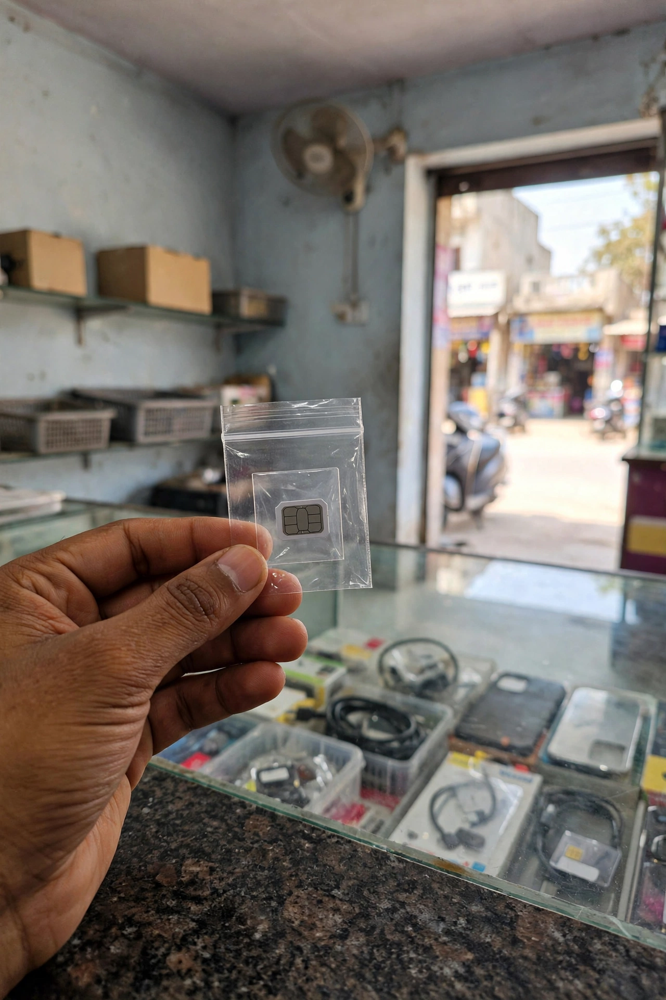
AI concept picture, not the real product
Always More With Vi Postpaid
125 nano creators visit Vi stores in Gujarat to start Vi Postpaid on camera and show day one use; Vi keeps 250 Reels and Stories for its channels for 6 months.
You receive one Vi Postpaid SIM Card through a store visit in Gujarat that Vi confirms within 24 hours of picking you. Open on a bright morning at the store counter holding the Vi SIM kit to the lens and saying "I just moved to Vi Postpaid, let me show you day one." Then film the activation at the counter, the SIM going in your phone, a quick call at home, and the Vi app showing unlimited calls and data rollover in clear daylight and warm home light. Keep your Reel to 25 to 35 seconds and add one Story with the store location tag on the visit day. Show the line trusted by millions across India on the Vi site on your phone screen, and say in your own words how the switch felt, while lines about OTT subscriptions, unlimited calls, roaming, and data rollover stay Vi’s words. Add Instagram’s paid partnership label with Vi and tag Vi in the Reel and Story, with no link or code for this content piece. Post both within 7 days of your visit and send the raw file so Vi can repost on its own handles and run the film as an ad for 6 months.
Do: Add Instagram’s paid partnership label with Vi and keep the gifted connection disclosure in the caption. Tag Vi and add the Gujarat store location tag in the Reel and Story. Film in daylight with the Vi SIM kit, phone screen, and Vi app clearly visible. Keep the Vi Postpaid benefits like data rollover and OTT as Vi’s site words, not your own test.
Don't: Do not show any other mobile brand, SIM, or recharge app in the frame. Do not delete the Reel or Story without the brand’s written approval. Do not buy views, likes, comments, or followers. Do not repeat Vi’s data rollover and unlimited calls lines as your own test result.
Idea 2
Claude
ready to travel the world? start at a vi store
83 micro creators in Gujarat with a trip abroad coming up walk into a Vi store, get an International Roaming Pack set up, and film it; you get store visits, 249 Reels and Stories with your location tag, and raw files for six months.
You get one Vi International Roaming Pack, plus the cash amount Vi sets, and a visit date at a Vi store in Gujarat within 24 hours of your pick, so apply if you have a trip abroad coming up. For the first three seconds, set your passport and phone down on the Vi store counter and hold the shot as the staff member reaches for your phone. After that, film the walk in from the street with the store sign in frame, your quick question at the counter in your own words, and the pack confirmation on your phone screen. Keep the Reel 20 to 30 seconds, vertical, in the store's own light and the street outside it. Post your first Story from inside the store with the location tag, and the second from home while you pack, showing where you're headed and the pack on your phone. Packs start at ₹649 on Vi's site and 'unlimited data and calls abroad' is Vi's line; you can show the pack, but say what it means for your trip in your own words. Post all three within 7 days of your visit and no later than 8 November, and send the raw files; Vi can repost and run them as ads for six months.
Do: Turn on Instagram's Paid partnership label and put #ad at the start of the caption. Tag Vi's official Instagram account and add the store's location tag on the Reel and the first Story. Open on your passport and phone on the store counter. Get the store sign in frame on the walk in. Send the raw files with your posts.
Don't: Don't show or name any other telecom network, SIM or roaming card. Don't delete or archive the posts without Vi's written approval. Don't buy likes, views or followers. Don't repeat 'unlimited data and calls abroad' or any price as your own promise; those are Vi's words. Don't film store staff who say no to being on camera.
Muse
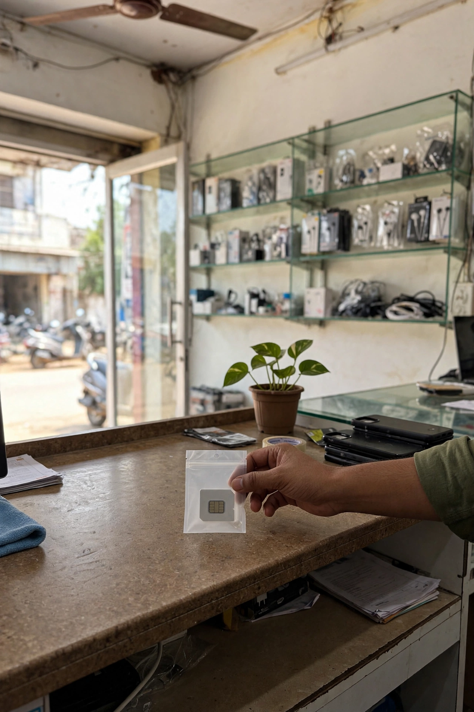
AI concept picture, not the real product
Ready To Travel The World With Vi
83 micro creators visit Vi stores to ask for the ₹649 roaming pack before a trip and film the answer; Vi gets footfall and 249 Reels and Stories to reuse for 6 months.
You receive one International Roaming Pack worth ₹649 through a Vi store visit in Gujarat that Vi confirms within 24 hours of picking you. Open by your packed suitcase in bright daylight holding your passport and saying "My flight is next week, so I came to Vi for roaming that works abroad." Then film the Vi staff circling the ₹649 pack on the leaflet, you asking about unlimited data and calls abroad, and a test call from home in clear window light and bright store light. Keep your Reel to 25 to 35 seconds and post two Stories, one with the store location tag and one with your packing. Show the site line enjoy unlimited data and calls abroad with packs starting at just ₹649, and say in your own words why that matters for your trip, while speed and unlimited claims stay Vi’s words. Add Instagram’s paid partnership label with Vi and tag Vi in the Reel and Stories, with no link or code for this footfall piece. Post all three within 7 days of your visit and send the raw file so Vi can repost on its own handles and run the film as an ad for 6 months.
Do: Add Instagram’s paid partnership label with Vi and keep the gifted pack disclosure in the caption. Tag Vi and add the Gujarat store location tag in the Reel and both Stories. Show the ₹649 leaflet and the unlimited data and calls abroad line exactly as printed. Say the trip need in your own words and keep the pack in frame in daylight.
Don't: Do not show any other network, eSIM, travel SIM, or roaming app in the video. Do not delete any post without the brand’s written approval. Do not buy views, likes, comments, or followers. Do not present Vi’s unlimited data and calls abroad line as your own promise of coverage.
Idea 3
Claude
home for diwali on vi 5g
250 micro creators film a YouTube Short of Vi 5G at home as the house gets ready for Diwali, indoors and out, and say how the network held up; you get real coverage stories from across India and raw files for six months.
Within 24 hours of your pick, Vi sends you a code for a Vi 5G SIM with the steps to set it up; if the 5G icon does not show where you live, tell Vi before you film. For the first three seconds, film your front door as the fairy lights go up, phone in hand, with the 5G icon on your status bar in frame. After that, start one video call on your Vi phone and walk it through the house while a second phone or someone at home films you: up to the terrace, into the kitchen where the sweets are being made, then out into your lane, without dropping the call. That's the shape of a real Vi review from Chennai about 'both indoor and outdoor coverage', so show us your own home and your own town. Keep it 30 to 45 seconds, vertical, in the warm evening light of diyas and fairy lights. Say in your own words how the network held up where you live; 'blazing-fast' and 'next generation connectivity' are Vi's words and stay in Vi's description, not yours, and quote no speed numbers. Post the Short by 5 November so it lands before Diwali, and send the raw file with it; Vi can repost and run it as an ad for six months.
Do: Tick 'includes paid promotion' in YouTube Studio and put #ad in the title or the first line of the description. Name Vi in the description. Get the 5G icon on your screen in the first three seconds. Film indoors and outdoors in your own home and lane. Send the raw file with your post.
Don't: Don't show or name any other telecom network, and don't compare speeds. Don't delete or set the Short to private without Vi's written approval. Don't buy views, likes or subscribers. Don't repeat 'blazing-fast' or any speed number as your own claim.
Muse
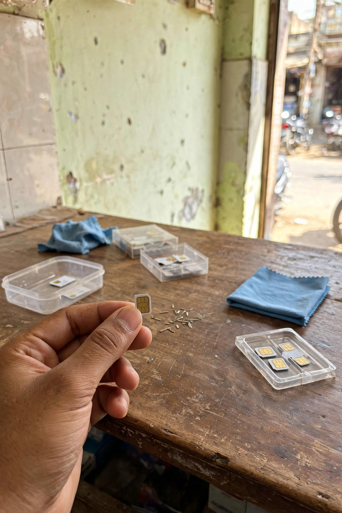
AI concept picture, not the real product
Diwali Recharge With Vi Prepaid
250 micro creators film a Diwali week YouTube Short about getting and recharging Vi Prepaid; Vi keeps all 250 Shorts as social proof for 6 months.
You receive one Vi Prepaid SIM Card through a Vi store visit in Gujarat that Vi confirms within 24 hours of picking you. Open at night beside Diwali lights holding the Vi prepaid cover to the camera and saying "Diwali travel is fixed, so I got Vi Prepaid recharged and ready." Then film the store handover, the online recharge step on your phone, and one festive call or data pack check at home in warm lamp light and bright daytime store light. Keep your YouTube Short to 30 to 40 seconds in vertical, with faces and pack clearly visible. Read the viewer review line "One year passed since I ported my primary sim to Vi. Had no issues so far," and say in your own words what prepaid packs and online recharge felt like for you, while blazing-fast network lines stay Vi’s words. Turn on YouTube’s paid promotion disclosure, tag Vi in the title and description, with no link or code for this proof piece. Post within 7 days of your visit and before 5 November for Diwali week and send the raw file so Vi can repost on its own handles and run the Short as an ad for 6 months.
Do: Turn on YouTube’s paid promotion disclosure and write gifted Vi connection in the description. Tag Vi in the title and description and mention Vi Prepaid by full name. Film vertical in sharp focus with the prepaid pack and recharge screen readable. Keep the festive setting simple and keep Vi’s network claims as the brand’s words.
Don't: Do not feature any other SIM, porting ad, or recharge brand in the Short. Do not delete the Short without the brand’s written approval. Do not buy views, likes, comments, or subscribers. Do not state Vi’s prepaid pack benefits as your own measured result.
Pluckk
Idea 1
Claude
First Bite, Fresh from Pluckk
125 nano creators open a box of Pluckk fresh fruits, film their first bite and what they make with the rest; you get 125 Reels, 125 Stories and the raw files, with six months to repost them and run them as ads.
You receive a box of Pluckk fresh fruits at your door, within 48 hours of being picked. Open on your hand lifting the first fruit out of the box on your kitchen counter and biting into it in the first three seconds, no talking yet. After that, film 20 to 30 seconds of what you do with the rest: a breakfast fruit bowl, slices packed in a tiffin, or a plate passed around the family in the evening. Shoot in daylight near a window in your real kitchen, no studio set. Say in your own words how it tasted and what you made with it; if you mention where it comes from, use Pluckk's line, sourced from 1000+ partner farms and traceable to the farmer. Leave washing and safety claims like ozone washing to Pluckk and do not explain them as your own. Post the Reel and one Story within 7 days of receiving the box, and send the raw clips with no text or music, since Pluckk may repost them and run them as ads for six months.
Do: Turn on Instagram's Paid partnership label and add #ad or #gifted in the caption. Tag Pluckk's Instagram account in the Reel, the caption and the Story. Show the first bite in the first three seconds, before you speak. Film in daylight in your own kitchen with the Pluckk box in frame. End with #EatGoodDoGreat if it fits your voice.
Don't: Do not show other grocery apps, fruit brands or delivery bags in the frame. Do not delete or archive the Reel or Story without Pluckk's written approval. Do not buy likes, views, comments or followers. Do not repeat ozone-washed, germ-free, sterilised, Non-GMO or FDA lines as your own claims. Do not make health or nutrition promises about the fruit.
Muse
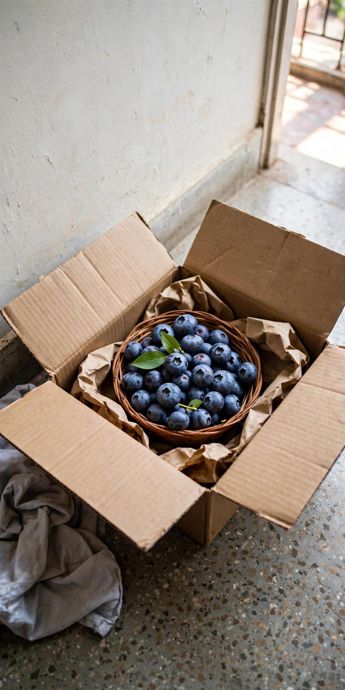
AI concept picture, not the real product
Fresh Fruit That Shows Its Farm
125 nano creators unbox and taste Fresh Fruits on camera, the brand keeps 250 fresh Reels and Stories to reuse for six months.
You receive a Pluckk Fresh Fruits box at your home, shipped after selection. Open with your hands lifting the lid on a bright kitchen counter and say, "Look how fresh and clean this Pluckk fruit looks." Then film a wash, a close cut of one fruit, and one honest bite in daylight in your kitchen, and keep the Reel to 25 to 35 seconds plus one Story of the open box. Show the traceable to the farmer card and say in your own words how the fruit tasted and what you made with it. Say the line about ozone-washed to remove germs only as what Pluckk says, not as your own test or promise. Film in morning daylight, keep your counter tidy, and send the raw Reel and Story files to the brand. Post within 7 days of receiving the box so the brand can reuse it on its own channels for six months.
Do: Add Instagram's Paid Partnership label with Pluckk and start your caption with #ad. Tag Pluckk in the Reel and Story and keep the product tag on. Film in daylight and show the real wash, cut and bite. Say that Pluckk says the fruits are sourced from 1000+ partner farms and traceable to the farmer.
Don't: Do not show any other fruit brand, grocer or delivery app in the frame. Do not delete the Reel or Story without the brand's written approval. Do not buy likes, views, comments or followers. Do not present Pluckk's ozone-washed to remove germs line as your own test or promise.
Idea 2
Claude
One Veggie Box, Every Meal
250 micro creators cook their home meals from one box of Pluckk vegetables and post it as a YouTube Short; you get 250 real kitchens showing your veggies and the raw files, with six months to repost them and run them as ads.
You receive a box of Pluckk fresh vegetables at your door, within 48 hours of being picked. Open with a top-down shot of every vegetable laid out on your counter and say one line in the first three seconds, like "Every meal in this video started in this one box." Then cut through your meals, one quick clip each: the first sabzi, a soup or stir-fry, and the last dish that finishes the box, each with the vegetables going into the pan. Keep it vertical, 30 to 50 seconds, filmed in daylight at your own stove. Say in your own words what you cooked, what your family liked and what you would order again; if you mention where the vegetables come from, use Pluckk's words, from partner farms and traceable to the farmer, and if you mention delivery, order before 11:59 pm and it comes the next day. Leave ozone washing, Non-GMO and safety claims to Pluckk and do not present them as your own. Post the Short within 14 days of receiving the box, with 2 more days to edit, and send the raw file, since Pluckk may repost it and run it as an ad for six months.
Do: Tick YouTube's 'Includes paid promotion' box when you upload. Say or write that Pluckk sent you the vegetables, and name Pluckk in the title or description. Open on the full vegetable layout with your one line in the first three seconds. Show the vegetables going into the pan in every meal clip. Keep it vertical and under 60 seconds.
Don't: Do not show other grocery apps, vegetable brands or delivery bags. Do not delete or make the Short private without Pluckk's written approval. Do not buy views, likes, comments or subscribers. Do not repeat ozone-washed, sterilised, pesticide-free, Non-GMO or FDA lines as your own claims. Do not claim how long the vegetables stay fresh or any health benefit.
Muse
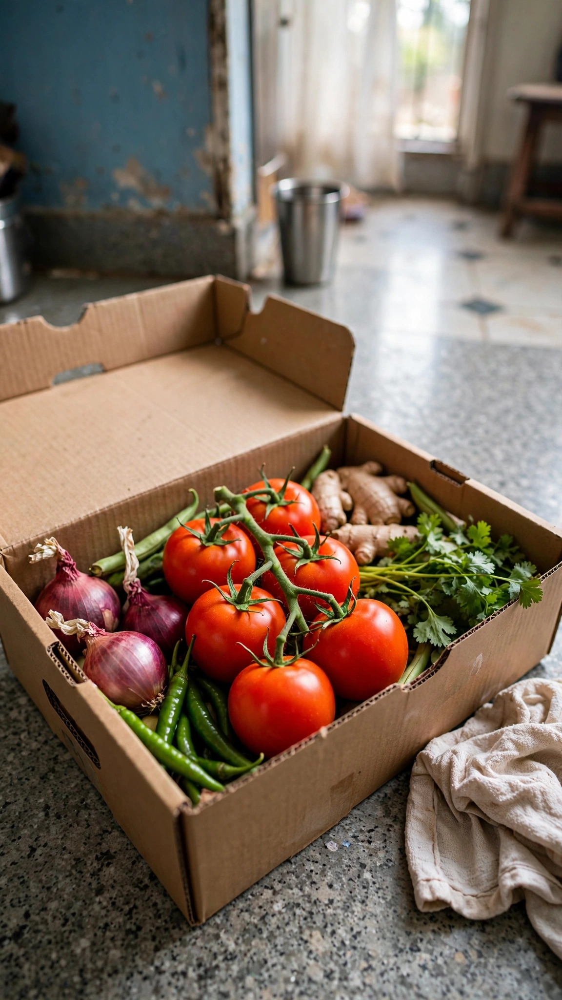
AI concept picture, not the real product
The Veggie Drawer Truth Test
250 micro creators sort, chop and cook Fresh Vegetables in YouTube Shorts, the brand keeps trusted video proof to reuse for six months.
You receive a Pluckk Fresh Vegetables box at your home, shipped after selection. Open with your fridge drawer full of Pluckk veggies in daylight and say, "I checked every tomato and bhindi, here is what I found." Then film a quick sort on your counter, a snap or chop of two veggies, and one dish you cook, and keep the Short to 35 to 45 seconds. Film in bright kitchen daylight with no filter, so the colour and freshness show true. Mention in your own words which veggies looked best and say that Pluckk says quality is checked for every order by its HACCP Certified team. Keep any line about ozone wash and germs as the brand's words, not your own lab result, and send the raw Short file to the brand. Post within 14 days of receiving the box, plus 2 days to edit, so the brand can reuse it for six months.
Do: Tick YouTube's paid promotion box and put #ad at the start of your title and description. Mention Pluckk by name and add only the links the brand approves. Show the real colour with no beauty filter and keep the kitchen light bright. Say that Pluckk says quality is checked for every order by its HACCP Certified team.
Don't: Do not show any other vegetable brand, grocer or meal kit in the Short. Do not delete the Short without the brand's written approval. Do not buy views, likes, comments or subscribers. Do not present Pluckk's ozone wash, farm or quality check claims as your own findings.
Idea 3
Claude
Diwali Cooking, Already Chopped
83 micro creators cook a Diwali dish for guests straight from a pack of Pluckk Cuts & Mixes and share a discount code; you get festive-week orders you can track to each creator.
You receive a pack of Pluckk Cuts & Mixes plus the cash amount Pluckk sets, within 48 hours of being picked. Open on the sealed pack tipping straight into a hot kadhai, with your line in the first three seconds: "Guests at 8, and I haven't chopped a thing." Then film the dish coming together and end on it served at your Diwali table, diyas or lights in the background, 20 to 30 seconds in all, in warm evening light. On your first Story show the pack arriving; on the second, put the code PLUCKK20 with a link sticker to pluckk.in. Say in your own words what you made and how the festive rush felt with the cutting already done; if you mention ordering, use Pluckk's words, free delivery above Rs 499 and order before 11:59 pm for next-day delivery. Leave ozone washing, Non-GMO and safety claims to Pluckk and do not present them as yours. Post the Reel and both Stories within 7 days of receiving the pack and no later than 5 November, before Dhanteras, and send the raw files, since Pluckk may repost them and run them as ads for six months.
Do: Turn on Instagram's Paid partnership label and add #ad in the caption. Tag Pluckk's Instagram account in the Reel, the caption and both Stories. Say the code PLUCKK20 at the end of the Reel and write it in the caption. Put the code and a link sticker to pluckk.in on your second Story. Open on the pack going into the kadhai with your line in the first three seconds.
Don't: Do not show other grocery apps, cut-vegetable brands or delivery bags. Do not delete or archive the Reel or Stories without Pluckk's written approval. Do not buy likes, views, comments, followers or link clicks. Do not repeat ozone-washed, sterilised, Non-GMO or FDA lines as your own claims. Do not change the code or promise a discount amount Pluckk has not given you.
Muse
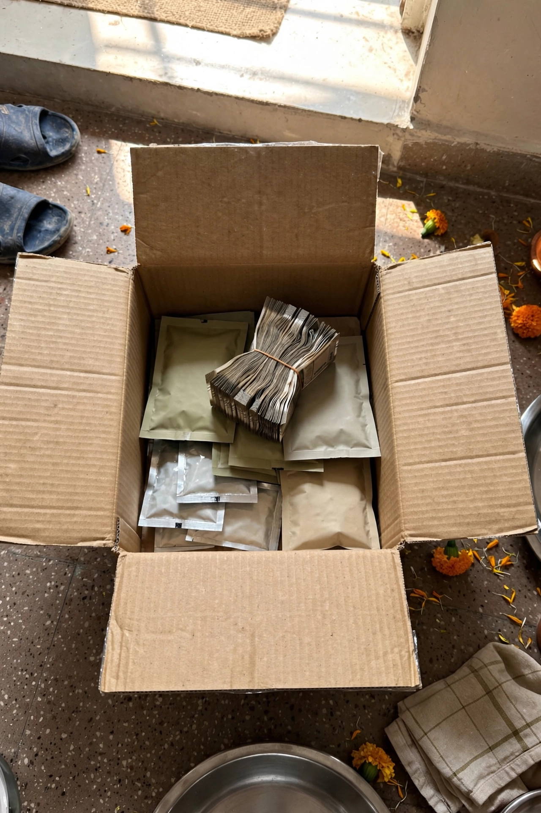
AI concept picture, not the real product
Diwali Without The Chopping
83 micro creators host Diwali plates with Cuts & Mixes and share PLUCKK20, the brand gets festive videos that push sales.
You receive Pluckk Cuts & Mixes packs plus cash on top, shipped after selection. Open with your dining table set with diyas blurred behind you holding two packs and say, "Diwali guests are coming, and I did zero chopping." Then film the packs opening, a quick toss into a bowl, and friends or family tasting, and keep the Reel to 20 to 30 seconds plus two Stories of the plate and the pack. Film in warm evening light in your kitchen and dining area with the festive setup showing. Say in your own words how much time you saved and that Pluckk says its produce is Safe, Fresh and Clean and ozone-washed to remove germs. Keep that wash line as the brand's claim, not your own test, and put the code the brand gives you, PLUCKK20, as text on the Reel and both Stories and in your caption. Post within 7 days of receiving the packs and before 5 November, so it stays live for Diwali shopping.
Do: Add Instagram's Paid Partnership label with Pluckk and start your caption with #ad. Tag Pluckk and show the code PLUCKK20 as text on the Reel and both Stories. Film the real packs, the toss and the tasting in your festive setup. Say that Pluckk says the produce is Safe, Fresh and Clean and sourced from 1000+ partner farms.
Don't: Do not show any other grocer, chopping brand or meal kit in the Reel or Stories. Do not delete any post without the brand's written approval. Do not buy likes, views, comments or followers. Do not present Pluckk's ozone-washed to remove germs line as your own test or guarantee.
Procam International
Idea 1
Claude
Race Day Live on Red Road
Ten creators run the Tata Steel World 25K and post three Stories as it happens, from the dark start line to the finish, and Procam gets every raw clip to repost and run as ads for six months.
You get two passes to the Tata Steel World 25K on Red Road, Kolkata, collected at the door on race day, Sunday 20 December. Story one, first three seconds: phone up in the start pen around 5:15 AM, Red Road still dark, as you say your bib number and the time you are chasing. Story two is mid-race, ten seconds of the runners around you and the road ahead; Story three is the finish, medal in your hand, as you tell us in your own words the one moment you will remember. Keep each Story under 15 seconds, shoot vertical in the dawn light with the crowd in frame, and skip any filter that hides the road. Show one real detail: the 5:30 AM start, or say that Procam's races have raised INR 696 crore for charity, as Procam's figure. Lines like 'the world's leading 25k' belong to Procam, so credit them to Procam or leave them out. Post all three as it happens on race day with the location tag Red Road, Kolkata, and send the raw clips within 24 hours. Procam may repost your Stories and run them as ads for six months.
Do: Use Instagram's Paid partnership label, or put #ad at the start of every Story. Tag Procam and add the location tag Red Road, Kolkata on all three Stories. Post each Story live on race day, not the next morning. Show the start pen before 5:30 AM so the dark sky tells the story. Send the raw clips to the brand within 24 hours.
Don't: Do not show or tag other races, running events or competing sports brands. Do not delete or archive the Stories without written approval from Procam. Do not buy views, likes or followers. Do not say 'the world's leading 25k' or the charity figures as your own claims.
Muse
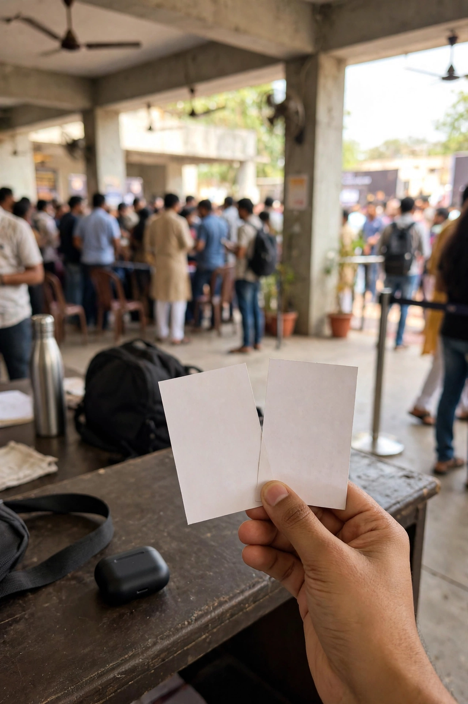
AI concept picture, not the real product
Red Road Roars at 530
83 creators film race day on Red Road in three live Stories; Procam keeps every file to repost and run as ads for six months.
You receive 2 passes to the Tata Steel World 25K on Red Road, Kolkata from Procam International, scanned at the door on race day. Open on Red Road in the dark before sunrise with the crowd behind you and say "It is 5:30 AM on Red Road and Kolkata is running." After that film three vertical Stories as it happens, the start line, one mid-race moment and your finish, each 10 to 15 seconds in early morning light on the road. Say in your own words why you came and that this is described by Procam as the world's leading 25K starting at 5:30 AM. The lines about INR 696 crore raised and over 1200 NGOs stay the brand's words, repeat them only as what Procam says and not as your own claim. There is no link or code for this one, and Procam may repost your Stories and run them as ads for 6 months. Post all three Stories on race day itself and send the raw files the same night.
Do: Add the Instagram Paid Partnership label with Procam International on all three Stories. Tag Procam International and add the Red Road, Kolkata location tag on each Story. Film vertical and keep the 5:30 AM start boards readable. Keep your passes visible in one frame.
Don't: Do not show any other run, marathon, or fitness app in the frame. Do not delete the Stories without the brand's written approval. Do not buy views, likes, or followers. Do not present Procam's INR 696 crore and world's leading 25K lines as your own claim.
Idea 2
Claude
100 Days, Every Pace
Ten creators log their days in Procam's HDOR 100 Days of Running app and bring along a friend who has never run, and Procam gets a Reel, a Story and the raw files to repost and run as ads for six months.
You get two passes to the Tata Steel World 25K, and you join Procam's HDOR 100 Days of Running app, where runners log a run every day until 17 January 2027. First three seconds: the app open on your phone, thumb pressing log on today's run, as you say out loud which day you are on. Then film a friend who has never run lacing up for their first easy run or walk beside you, and log it together; your Reel runs 20 to 40 seconds and your Story points people to the Reel. Shoot outdoors in morning light in your own neighbourhood, any pace, no treadmill. Say in your own words why every pace counts, and you can add, as Procam's figure, that over 25% of its participants are women and the number grows every year. Keep health promises and results claims out, and leave Procam's lines as Procam's. Post the Reel and Story by the posting deadline on your campaign card and send the raw files. Procam may repost your video and run it as an ad for six months.
Do: Use Instagram's Paid partnership label, or put #ad at the start of the caption and the Story. Tag Procam in the Reel and the Story. Show the app screen clearly for at least two seconds as you log the day. Keep your friend's first run easy and real; a walk-run is welcome. Send the raw files to the brand.
Don't: Do not show or name other running apps, races or competing sports brands. Do not delete or archive the Reel or Story without written approval from Procam. Do not buy views, likes or followers. Do not make health or weight-loss claims, and do not repeat Procam's claims as your own.
Muse
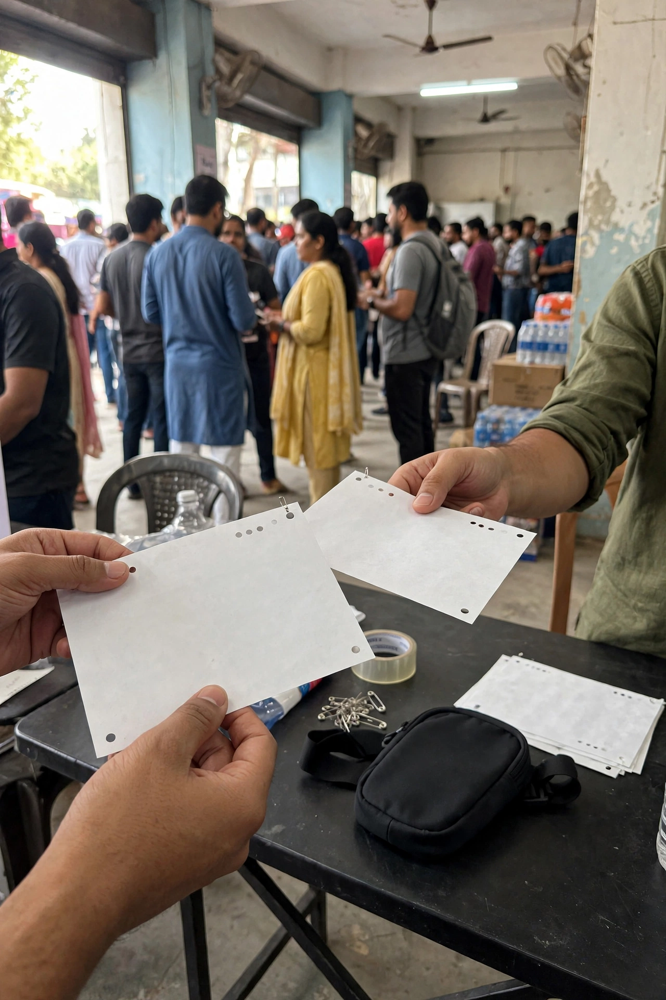
AI concept picture, not the real product
Bib In Hand Kolkata Runs
125 creators collect bibs at the 18-19 December expo and post one Reel plus one Story; Procam gets expo buzz and a reuse library for six months.
You receive 2 passes from Procam International for the Tata Steel World 25K Race Expo on 18-19 December in Kolkata, collected at the door for bib pickup. Open on a close-up of your bib in your hand inside the expo hall and say "My bib is in hand, Kolkata is ready to run." After that film a 25 to 35 second daytime Reel walking through bib collection and the Red Road start boards, plus one Story of your bib number. Say in your own words who you will run for and mention that over 25 percent of participants are women and the number grows every year. The world's leading 25K line and the 20 December 5:30 AM start stay the brand's words, say them as what the brand says. There is no link or code for this one, and the brand may repost your Reel and Story and run them as ads for 6 months. Post the Reel and the Story on your expo day itself and send the raw files that night.
Do: Add the Instagram Paid Partnership label with Procam International on the Reel and the Story. Tag Procam International and add the Kolkata expo location tag. Show the Tata Steel World 25K Race Expo bib collection clearly in daylight. Keep the raw Reel file to share with the brand.
Don't: Do not show any other race, expo, or running app in the frame. Do not delete the Reel or Story without the brand's written approval. Do not buy views, likes, or followers. Do not present the world's leading 25K and over 25 percent women lines as your own claim.
Idea 3
Claude
Road to Red Road
Ten creators cut their weeks of training into one Reel that ends at the Tata Steel World 25K finish line, and Procam keeps every file to post on its own page and run as ads for six months.
You get two passes to the Tata Steel World 25K on Red Road, Kolkata, Sunday 20 December, 5:30 AM start. First three seconds: the shoes you trained in, scuffed and sitting by your door, as you say how many weeks you have been training for this. Then cut three short moments you filmed in the weeks before (a long run, a strength day, a rest day) into the race itself: the start, one stretch of Red Road, and your finish. Keep it 30 to 45 seconds, vertical, natural light, real breath and real sweat. Say in your own words what the build-up asked of you and what crossing the line felt like. 'The world's leading 25k' and the charity figures are Procam's lines; credit them to Procam or leave them out. Post the Reel on race day and send every raw clip, because Procam keeps the files and may repost and run them as ads for six months.
Do: Use Instagram's Paid partnership label, or put #ad at the start of the caption. Tag Procam and add the location tag Red Road, Kolkata. Film your long run, strength day and rest day in the weeks before so the Reel has a build-up. End on your finish, not on a selfie at home. Send every raw clip to the brand.
Don't: Do not show or tag other races, running events or competing sports brands. Do not delete or archive the Reel without written approval from Procam. Do not buy views, likes or followers. Do not repeat 'the world's leading 25k' or the INR 696 crore figure as your own claim.
Muse
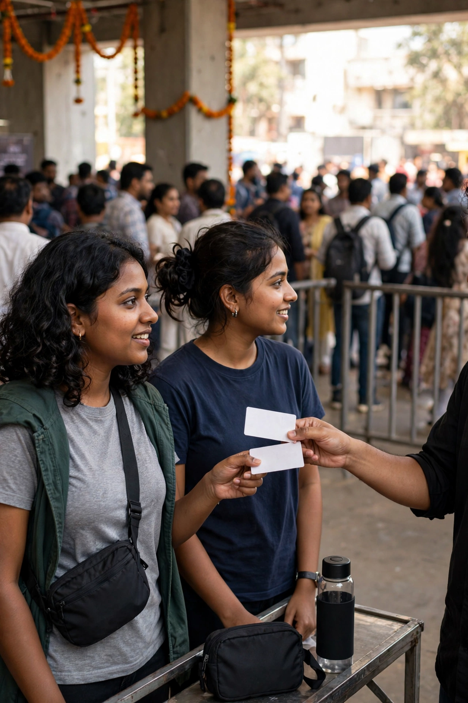
AI concept picture, not the real product
Every Pace Finds Its Road
250 creators log daily runs in the HDOR 100 Days of Running app with a friend who has never run; Procam gets real app stories to reuse for six months.
You receive 2 passes from Procam International tied to the HDOR 100 Days of Running app that runs to 17 January 2027, entry is at the door on race weekend. Open on your phone screen showing your run log with your friend beside you and say "Day 12 in the app, and I brought a friend who has never run." After that film a 30 to 40 second Reel in bright morning light outdoors, your short run, the app screen and your friend walking or jogging with you. Say in your own words how logging daily runs feels and that Procam calls this movement radical and sustainable impact. The lines about INR 696 crore for philanthropy and fastest growth market globally stay the brand's words, do not present them as your own result. There is no link or code for this one, and the brand may repost your Reel and run it as ads for 6 months. Post the Reel within 7 days of getting your passes and send the raw file with it.
Do: Add the Instagram Paid Partnership label with Procam International on the Reel. Tag Procam International in the caption and on the video. Show the HDOR 100 Days of Running app screen with your logged days. Bring a friend who has never run and keep the run outdoors in morning light.
Don't: Do not show any other running, coaching, or fitness app on screen. Do not delete the Reel without the brand's written approval. Do not buy views, likes, or followers. Do not present the INR 696 crore and fastest growth market lines as your own result.
Zomoz
Idea 1
Claude
Taste Is the Only Constant
125 nano creators across six cities come in for a free meal for two and film the first bite at a Zomoz table; you get 125 Reels and 125 Stories, plus every raw file to repost and run as ads for six months.
You get a meal for two on the house at your nearest Zomoz outlet, on a date you pick and Zomoz confirms within 24 hours. Your first three seconds are one momo split open with chopsticks right in front of the lens, steam rising, no talking. Then the first bite, your honest face, and a quick look at the full plate and the person you brought. Keep the Reel 15 to 30 seconds, shot vertical at the table in the outlet's own light, no filters that change the colour of the food. Order what you like from the menu and say in your own words what you ordered and how it tasted. Zomoz's line is "Taste is the only constant"; you can show it on screen as theirs, but your verdict is yours. Add one Story from the table with the brand and the outlet location tagged. Post within 7 days of your visit and no later than 10 November, and send the raw files the same day; Zomoz may repost them and run them as ads for six months.
Do: Turn on Instagram's paid partnership label and tag the Zomoz handle the brand gives you. Tag the outlet location on the Reel and the Story. Open on the steam and the split momo, close to the lens. Say what you ordered and how it tasted, in your own words. Send the raw files with your post.
Don't: Don't show or name any other momo or food brand. Don't delete or archive the post without written approval from Zomoz. Don't buy likes, views, comments or followers. Don't call Zomoz India's most acclaimed momo brand or say they serve only the pure as if it were your own claim; those lines stay the brand's.
Muse
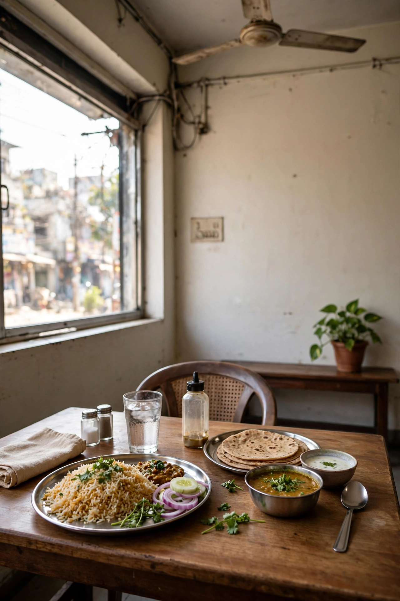
AI concept picture, not the real product
Taste Is The Only Constant
125 nano creators visit a Zomoz outlet for a meal for two, film a daylight tasting Reel and Story, and Zomoz keeps every file to reuse for six months.
You get a meal for two on the house at your nearest Zomoz outlet in Bengaluru, Hyderabad or Pune, with the visit date fixed by Zomoz within 24 hours of selection. Open on a close-up of steam rising from a fresh momo plate as you say "Taste is the only constant, and I am testing that today." After that, film your full table in daylight, break one momo open on camera, taste two different momos and say which one you would order again. Keep your Reel to 25 to 35 seconds in bright daylight inside the outlet, and add one Story showing the Zomoz board on the same visit. Show or say one real Zomoz detail, that Zomoz runs outlets across Mysore, Pune, Mumbai, Kolkata, Bangalore, Hyderabad, Chennai and Mangalore. Say in your own words what you ate, what surprised you and who should come with you, and leave the line "INDIA'S MOST ACCLAIMED MOMO BRAND" for Zomoz to use, not as your own claim. There is no link or code to share, send the raw files as asked, and post your Reel and Story within 7 days of the visit.
Do: Add Instagram's Paid Partnership label to your Reel and Story and tag Zomoz with the location tag. Film in bright daylight inside the Zomoz outlet with the food and the board clearly seen. Mention your city and what you ate in your own words. Allow Zomoz to repost your content on its own handles and run it as an ad for 6 months.
Don't: Do not show any other momo brand, restaurant, cafe or food delivery box in your Reel or Story. Do not delete your Reel or Story without the brand's written approval. Do not buy likes, views, comments or followers. Do not present "INDIA'S MOST ACCLAIMED MOMO BRAND" or "best momos of India" as your own finding; keep them as the brand's words.
Idea 2
Claude
Momos Round the Corner
83 micro creators show their followers how to get from their office, college or mall to the nearest Zomoz and what to order there; you get a Reel and two location-tagged Stories from each that point local people to your door.
You get a meal for two on the house at the Zomoz outlet nearest your office, college or mall, on a date you pick and Zomoz confirms within 24 hours. Your first three seconds are you outside the building you started from, saying where you are and how far the momos are, then you start walking. Film the walk in short cuts, the Zomoz sign as you arrive, ordering at the counter, and sitting down with the plate. Keep the Reel 20 to 40 seconds, vertical, daylight on the walk and the outlet's own light inside. Zomoz has outlets in malls and IT campuses, including Amazon Campus and Deloitte Campus, so if yours is one of these, show it, but film only where the campus allows cameras. Say in your own words what you ordered, how long the walk took, and who should come here. Post one Story when you arrive with the outlet location tag, and a second Story with the plate and how to get there. Post within 7 days of your visit and no later than 10 November, send the raw files the same day, and Zomoz may repost and run them as ads for six months.
Do: Turn on Instagram's paid partnership label and tag the Zomoz handle the brand gives you. Add the outlet location tag on the Reel and on both Stories. Open outside the place you start from and say how far the outlet is. Show the Zomoz sign on arrival so people know what to look for. Send the raw files with your post.
Don't: Don't name or linger on any other momo or food brand on the walk or at the table. Don't delete or archive any post without written approval from Zomoz. Don't buy likes, views, comments or followers. Don't call Zomoz India's most acclaimed momo brand or the best momos of India as your own words; those claims stay the brand's.
Muse
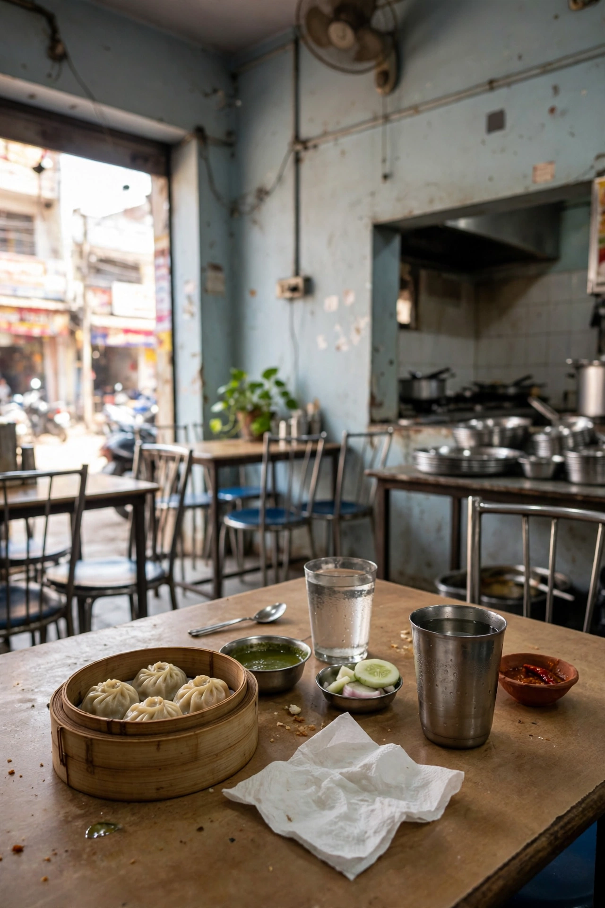
AI concept picture, not the real product
Bring A Friend For Momos
83 micro creators bring a friend for a free meal for two at Zomoz, post a visit Reel with location tag, and drive their followers to visit.
You get a meal for two on the house at Zomoz in Bengaluru, Hyderabad or Pune, with the visit date fixed by Zomoz within 24 hours of selection, so bring one hungry friend with you. Open outside the Zomoz board with your friend beside you as you say "You have not done momos till you have done this place." After that, walk in together, film the menu, the served Momos plates and both of you tasting, and close with your friend giving the meal a one-line rating. Keep your Reel to 20 to 30 seconds in bright natural light inside the outlet, and post two Stories from the same visit, one of the food and one with the location tag. Show or say one real Zomoz detail, that Zomoz serves only the pure to be sure, by showing the certification display inside the outlet. Say in your own words what you both ate, what you liked and why followers in your city should visit, and leave "INDIA'S MOST ACCLAIMED MOMO BRAND" as the brand's words, not your own. There is no link or code to share, send the raw files as asked, and post your Reel and both Stories within 7 days of the visit.
Do: Add Instagram's Paid Partnership label to your Reel and both Stories and tag Zomoz with the location tag. Bring one friend and show both of you eating at the table in bright natural light. Say your city and outlet in your own words so followers know where to go. Allow Zomoz to repost your content on its own handles and run it as an ad for 6 months.
Don't: Do not show any other momo brand, restaurant, cafe or food delivery box in your content. Do not delete any post without the brand's written approval. Do not buy likes, views, comments or followers. Do not claim "INDIA'S MOST ACCLAIMED MOMO BRAND" as your own verdict; leave that line to the brand.
Idea 3
Claude
Pure to Be Sure This Diwali
250 micro creators bring a friend or family member to Zomoz in the days before Diwali and both rate the momos out of ten in a YouTube Short; you get 250 honest verdicts live before Diwali, plus the raw files for six months.
You get a meal for two on the house at a Zomoz outlet in your city, on a date you pick and Zomoz confirms within 24 hours, so bring the friend or family member you will celebrate Diwali with. Your first three seconds are you facing the camera at the table, plate already there, saying "Diwali's almost here, we're rating these momos." Then you and your guest each take one, chew, and give a score out of ten with one reason. Keep the Short 30 to 50 seconds, vertical, shot at the table in the outlet's light, with a festive touch only if it is really there. Order what you like and say in your own words what you ordered and which one won. Zomoz says "We serve only the pure to be sure"; you can show it as their line, but the scores are yours and your guest's. Post as soon as you can after your visit and no later than 5 November so it is live before Diwali on 8 November, then send the raw files the same day; Zomoz may repost and run them as ads for six months.
Do: Tick YouTube's paid promotion box and put #ad in the title or description, with the Zomoz name and the outlet's city. Open facing the camera with the plate already on the table. Give a score out of ten with one honest reason, and have your guest do the same. Post by 5 November so it lands before Diwali. Send the raw files with your post.
Don't: Don't show or name any other momo or food brand. Don't delete or set the Short to private without written approval from Zomoz. Don't buy views, likes, comments or subscribers. Don't say Zomoz serve only the pure or are India's most acclaimed momo brand as if it were your own claim; those lines stay the brand's.
Muse
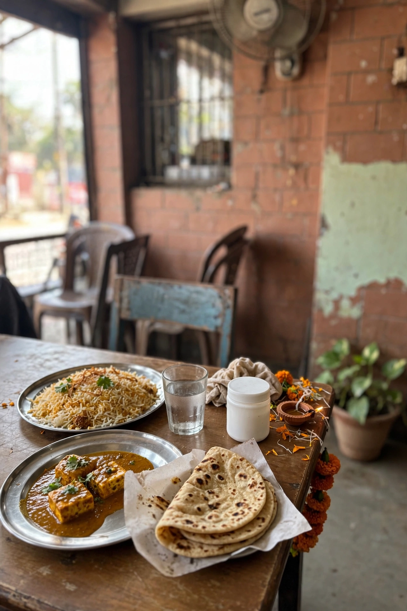
AI concept picture, not the real product
Diwali Needs More Momos
250 micro creators post a Diwali-week YouTube Short from a Zomoz meal for two and give Zomoz real customer proof it can reuse for six months.
You get a meal for two on the house at Zomoz in Bengaluru, Hyderabad or Pune, with the visit date fixed by Zomoz within 24 hours of selection, timed for Diwali week. Open on you holding a momo up to the camera in the busy outlet as you say "Diwali snacks are done, I found the momo place everyone talks about." After that, film a quick tour of the outlet, your table with two plates, and one honest bite reaction, all in vertical video. Keep your YouTube Short to 30 to 40 seconds in bright daylight or strong indoor light, with the Zomoz name visible behind you. Show or say one real Zomoz detail, License No 23621028002687, by pointing at the display board or saying the outlet shows its pure-food certification. Say in your own words how the visit felt during the festival rush and who you would bring for Bhai Dooj, and leave "INDIA'S MOST ACCLAIMED MOMO BRAND" as the brand's line, not your own claim. There is no link or code to share, send the raw file as asked, and post your Short within 7 days of the visit and before 5 November so it lands in the Diwali window.
Do: Turn on YouTube's paid promotion disclosure for your Short and tag Zomoz in the description. Film vertical in bright light inside the outlet with the Zomoz name in one frame. Keep the tasting honest and in your own words, and mention your city. Allow Zomoz to repost your Short on its own handles and run it as an ad for 6 months.
Don't: Do not show any other momo brand, restaurant, cafe or packaged snack in your Short. Do not delete your Short without the brand's written approval. Do not buy views, likes, comments or subscribers. Do not present "INDIA'S MOST ACCLAIMED MOMO BRAND" as your own claim; keep it as the brand's words.
Quirksmith
Muse run failed at research ({'step': 'research', 'kind': 'site_unreadable', 'message': 'The site answered 429 when we tried to read it. Paste a short brief instead.', 'at': '2026-10-31T10:18:21.028Z'}).